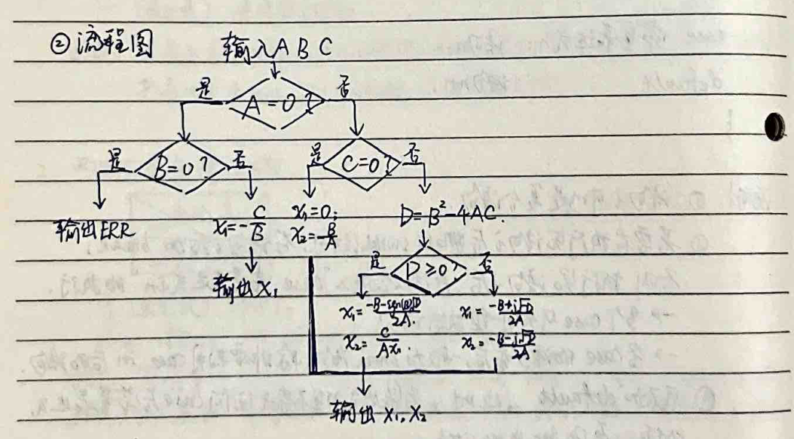
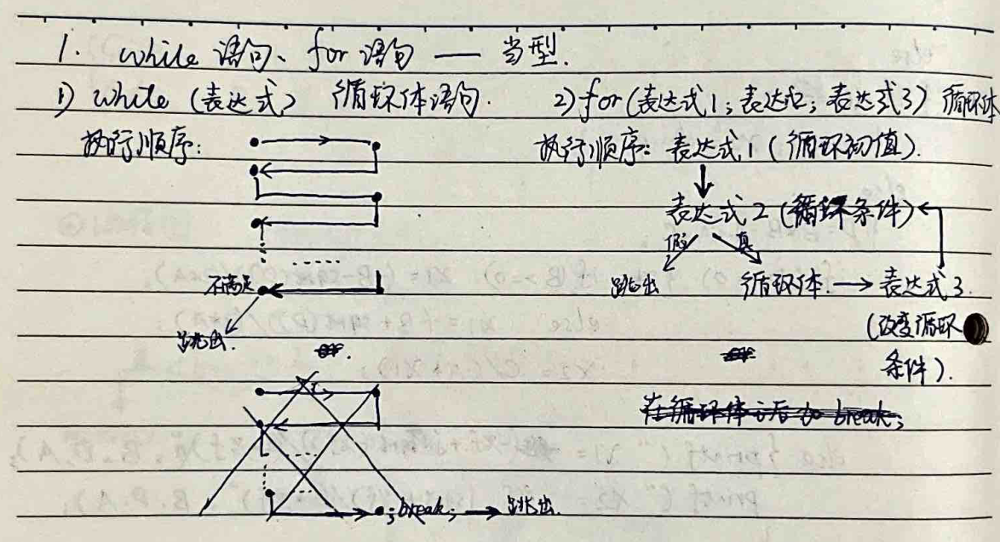
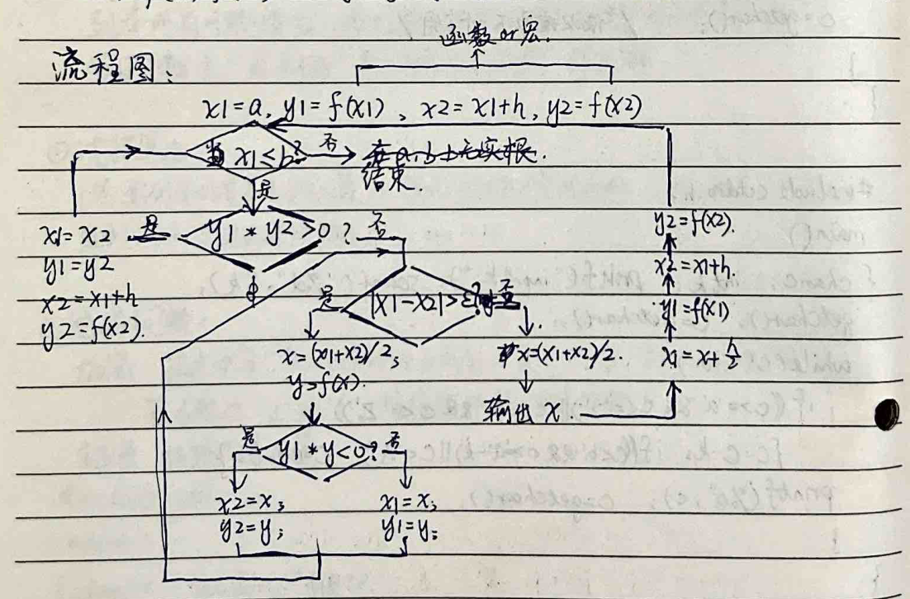
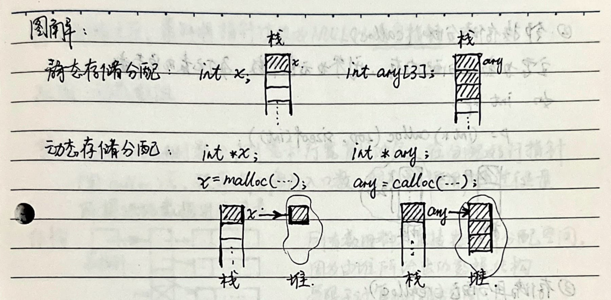
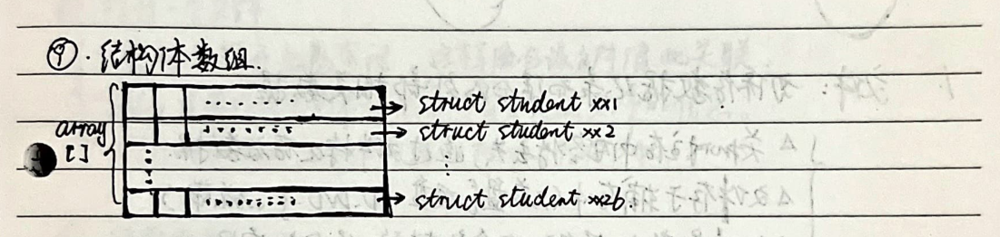
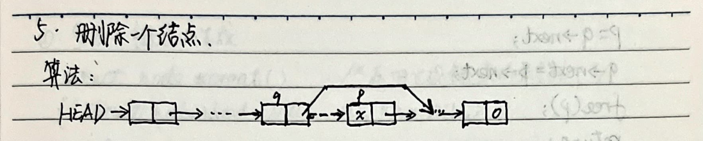

1. C Programming
English translation of C Programming notes
Electronic Components' Two Stable Convertible Physical States
# Binary (0/1): Integer, Real, Character, and Instruction Storage, Processing, and Transmission Forms
# Octal (0-7) / Hexadecimal (0-9, A-F) ↔ Daily Life: Decimal (0-9)
1. **Binary to Decimal:** Each digit according to the weight × 2^i, i ∈ N
2. **Decimal to Binary:** - Integer part: Divide by 2 and take the remainder (exact) + fractional part: Multiply by 2 and take the integer part (certain precision)
2. **Hexadecimal to Decimal:** Each digit according to the weight × 16^i, i ∈ N
3. **Decimal to Hexadecimal:** - Integer part: Divide by 16 and take the remainder (exact) + fractional part: Multiply by 16 and take the integer part (certain precision) - Octal and decimal conversion similar
3. **Hexadecimal, Octal ↔ Binary:** Since 16 = 2^4, 8 = 2^3, so binary (2) = -1111(16), ternary (3) = -1111(8) Note: When converting from binary to hexadecimal or octal, center around the decimal point and expand by four digits (bits) as units. Not enough units are padded with 0.
Binary Arithmetic and Logical Operations
1. Addition: - 0 + 0 = 0 - 0 + 1 = 1 + 0 = 1 - 1 + 1 = 10 (carry 1 to the next higher bit)
2. Subtraction: - 0 - 0 = 1 - 1 = 0 - 1 - 0 = 1 - 0 - 1 = 1 (borrow 1 from the next higher bit)
3. Multiplication: - 0 x 0 = 0 - 0 x 1 = 1 x 0 = 0 - 1 x 1 = 1
4. OR (Logical OR): - 0 OR 0 = 0 - 0 OR 1 = 1 OR 0 = 1 OR 1 = 1 - ... (parallel, series)
5. AND (Logical AND): - 1 AND 1 = 1 - 0 AND 1 = 1 AND 0 = 0 AND 0 = 0 - ... (series, parallel)
6. NOT (Logical NOT): - 1 = 0 - 0 = 1 - ... (complement)
7. XOR (Exclusive OR): - 0 XOR 0 = 1 XOR 1 = 0 - 0 XOR 1 = 1 XOR 0 = 1
Representation of Numbers in Computers - Fixed Point and Floating Point
1. Fixed Point: - Integer: Fixed-point integer - Fraction: Fixed-point fraction - Generally has 8 k bits, k ∈ Z = k bytes = 2k hexadecimal bits. - Due to fixed-point fractions, the default position of the decimal point is after the sign bit, not in the integer part. Thus, fixed-point integers and fractions in binary fixed-point representation are the same. At this time, the sign bit should be determined based on the specific situation. - Original code: The above fixed-point number representation method, sign bit + number, cannot be directly used for calculation (same sign bit). - Complement code: The complement code of a positive number is the same as the original code of the original code. The complement code of a negative number is the original code of the original code except for the sign bit. The complement code is used in the two's complement representation.
2. Floating Point: - The floating-point number is represented in the form of a normalized floating-point number.
$\downarrow$ positive number's two's complement representation = one's complement representation = original sign-magnitude representation
3) negative number's two's complement representation = one's complement representation last bit + 1
Using $n$ binary bits to store a two's complement representation, which can represent $+ (2^0 + \dots + 2^{n-1}) = +2^{n-1} - 1$ and $- (2^0 + 2^1 + 2^2 + \dots + 2^{n-1}) - 1 = -2^{n-1}$ numbers within.
In computers, all addition and subtraction operations are converted to two's complement addition, and the sign bit participates in the operation. The calculation result is two's complement representation, which can be converted back to original sign-magnitude representation.
4) Offset binary representation: two's complement representation's sign bit is inverted (0 for negative, 1 for positive).
Using $n$ binary bits to store an offset binary representation, which can represent the integer range $-2^{n-1}$ to $2^{n-1} - 1$. Offset binary representation addition/subtraction and then taking the offset binary representation is the result in offset binary representation format.
2. Floating Point Numbers
Binary number $P = S \times 2^N$, where $S$: fixed-point fraction, $N$: fixed-point integer.
(mantissa) (exponent)
Mantissa $S$ (fixed-point fraction original sign-magnitude representation or two's complement representation) + Exponent $N$ (fixed-point integer two's complement representation or biased offset binary representation).
Highest bit of base / representation.
$$P = S \times 2^N, \quad S: \text{fixed-point fraction}, \quad N: \text{fixed-point integer}$$
Basic Data Types and Constants:
**Constants:** Values that do not change during program execution. Represented in various forms.
**Compiler classifies constants based on their representation forms. Different data types of constants occupy different bytes in the computer (char type: 1B; integer type: 4B; real type: 8B).**
# 1. Integer Constants
**1.1. Basic Integer Constants:** - **Two's Complement Representation:** Represents signed integers. - **Range:** -2^15 to 2^15 - 1. - **Input Format:** - Decimal: 0-9, + or - (positive integers can be written without a +). - Long integer constants end with an "L", but if not explicitly written, they are considered as long integers. - Hexadecimal: 0-9, a-f (starting with 0x). - Octal: 0-7 (starting with 0). - Note: The sign in hexadecimal or octal constants is not part of the number itself; it is a prefix. Therefore, hexadecimal and octal are generally used for unsigned integer constants.
**1.2. Floating Point (Real) Constants:** - **Decimal Representation:** 0-9, + or - and decimal point (must be present). - **Scientific Notation:** A.eB, where A is an integer and can be positive or negative. B can be a decimal number. - **Formula:** P = S * 2^N. - S: Mantissa - N: Exponent
**Example: Decimal Real Number 97.6875**
$$(97.6875)_{10} = (1100001.1011)_2$$ $$= (0.11000011011)_2 \times 2^7$$
| 63 62 | 52 51 | 0 | | --- | --- | --- | | 1 | 1 | 0 |
**Note:** 1. The sign bit of the mantissa is in the first bit of the 64 bits (bit 63). 2. The original code of the mantissa after removing the sign bit is always "1" (any number can be normalized), so we can remove this bit and add it back during calculation. 3. The exponent is converted to binary original code, then subtracted by 10 (2^10), so the 11 bits are then biased by 10. 4. A real constant can be accurate to 13 decimal places (excluding the first digit), but there is still an error.
**3. Character Constants:**
- A single character enclosed in single quotes (single quotes) or a backslash followed by a character (escape character) - Examples: 'a', '*', '\n', '\x'
- A character constant is stored in 1B (8 bits), storing the ASCII code value of the character (2^8 types). - Example: '6' is an integer constant, occupying 2B, in the computer it is (110)_2 = 0000 0000 0000 0110. - '6L' is a long integer constant, occupying 4B, in the computer it is (0...0 0110)_2. - '0.6e1' is a real constant, occupying 8B, in the computer it is (0.10...0110)_2. - '6' is a digit character, occupying 1B, in the computer it is the ASCII code value 54 = (110110)_2.
C language data types: integer, real, character, enumeration, structure, pointer. Basic data types.
5. Basic Data Types Variables
**Variable:** A variable is a memory location in the computer's memory that can hold a value that can change during the execution of the program. When declaring a variable, you specify the data type of the variable (variable name) to tell the system how much memory to allocate for the variable. Different variables can occupy different amounts of memory. The variable name must start with a letter (case-sensitive) or an underscore, followed by letters, digits, and underscores. In general, the number of characters in the variable name should not exceed 8; otherwise, it will not be recognized.
# 1. Integer Variables
- **Short Integer (2B):** `short` or `short int` (signed) has a range of -2^15 to 2^15 - 1 (with sign). - **Unsigned Short Integer (2B):** `unsigned short` or `unsigned short int` (unsigned) has a range of 0 to 2^16 - 1. - **Basic Integer (2B):** `int` (signed) has a range of -2^15 to 2^15 - 1. - **Unsigned Integer (2B):** `unsigned int` or `unsigned` has a range of 0 to 2^16 - 1. - **Long Integer (4B):** `long` or `long int` (signed) has a range of -2^31 to 2^31 - 1. - **Unsigned Long Integer (4B):** `unsigned long` or `unsigned long int` (unsigned) has a range of 0 to 2^32 - 1.
**Note:** 1. A type declaration statement can define multiple variables, with variables separated by commas. 2. When declaring variables, you can also initialize them (initialize) in the declaration. The values of these variables can be changed later in the program. 3. For integer variables, if no input data is entered, the values are taken from the rightmost bits (i.e., from the least significant bit to the most significant bit). 4. If the highest bit is filled with a number, it is considered a negative number.
2. Real Variables - Single Precision: 6-7 significant digits - Double Precision: 15-16 significant digits - float: 4B - double: 8B
3. Character Variables char ~ 1B ~ ASCII code ~ integer constant (lowest 8 bits: 1B)
- %c: output character data format specifier - %d: output basic integer data format specifier - Therefore, C's character data (ASCII code) and integer (1B: 0~2^8-1) cannot be used interchangeably. - (0~126) ↔ (original code takes the lowest 8 bits (0~255) → (0~126))
6. Data Input and Output - Input/Output Devices: Keyboard/Display... - Input/Output Data Formats: Integer, Real, Character... - Specific Input/Output Content
- Using "stdio.h" library input/output - printf("%format...", content) format output - scanf("%format...", &Address) format input - putchar(...) character output - getchar(...) character input
1. Format Output Functions - Integer Format Specifiers - Decimal: %d (basic), %ld (long), %u (unsigned basic), %lu (unsigned long) - Octal: %o (basic), %lo (long), %u (unsigned basic), %lu (unsigned long) - Hexadecimal: %x (basic), %lx (long), %u (unsigned basic), %lu (unsigned long) - After the percent sign, you can add + (for positive), - (for left alignment), m (total width), etc.
8B (as double precision)
2) Real type format specifier:
- Fixed-point real number:
%f - Exponential:
%e - System guarantees minimum width m:
%g %can be followed bym.n, wheremis the total width (including decimal point), andnis the number of digits after the decimal point (default is six digits, rounded if necessary).
3) Character type format specifier: %c
Note:
- Except for
%,d,f,c,s(string),l, etc., other double-quoted characters are output as they are. - First calculate the values of each item (constant/variable/expression), then store them in the output buffer according to their byte size. Extract data from the output buffer according to the format specifier. If it's not a format specifier, output the original character.
- When storing integers (two's complement), real numbers (IEEE floating-point), and characters (ASCII), the low-order byte part of the data (from right to left) is stored at the end of the storage space. The high-order byte part is stored at the beginning.
For example:
0x0000 00 01→0x01 00 00 00(stored in memory as two's complement). - When converting long to int, only the first 2B (from right to left) is stored in the storage space. (Reversed two's complement form).
2. Format input function:
- Integer: Same as output
- Real type:
- Single precision 4B:
%for%e - Double precision 8B:
%lf
- Single precision 4B:
3) Character type: `%c`, `%mc`.
Note: ① The items in the internal address table are variable addresses, separated by commas. For example, &a, &b, &c. ② The format specifier does not contain other characters. When inputting data, use a space or a tab to separate the data. If there are other characters, input them first and then the data. ③ A character variable can only store one character. The first character is assigned to char (%mc). ④ Do not use m.n to specify the width after the decimal point.
⑤ When a C program starts executing, the system allocates an input buffer in memory to store data entered from the keyboard. When executing a scanf() function, it checks if there is data in the input buffer. If there is (remaining data from the previous scanf()), it retrieves the data according to the format specifier and converts it to ASCII code, storing it in the corresponding address in the memory address table (from high to low). Else if there is no data in the input buffer, wait for the user to input data from the keyboard and press Enter or Return. Retrieve the data according to the format specifier that has not been used yet from the input buffer. If data is retrieved from the input buffer and a newline or return is entered, the input buffer is cleared. So in the input function's "format control" parameter, you cannot add a newline '\n'!
3. Character output function Outputs the character c at the current cursor position. putchar(c) where c is a character constant, character variable, integer variable, integer expression, or character literal (must be prefixed with a single quote) (converted to ASCII code).
4. Character input function Receives a character from the keyboard. char x; x = getchar(); char x; scanf("%c", &x);
A getchar() function only retrieves a character from the input buffer in sequence and stores it in the variable. The remaining characters are stored in the buffer for the next use. The input ends with a newline.
Chapter 7: Operators - Expressions
1. **Assignment Operator " = "** - **Syntax**: `left_value (variable) = expression` - **Function**: Assigns the value of the expression on the right to the variable on the left. - **Note**: If the data types on both sides of the assignment operator are different, the system automatically converts the data type. - **Example**: `x = x / 2` is equivalent to `x /= 2`.
2. **Arithmetic Operators** - **Addition**: `+` (double: addition; single: increment) - **Subtraction**: `-` (double: subtraction; single: decrement) - **Multiplication**: `*` (double: multiplication) - **Division**: `/` (double: division; integer division, truncates towards zero) - **Modulo**: `%` (double: modulo, only used for integer division) - **Arithmetic Expression**: A combination of operands and operators. - **Note**: When different data types are mixed in arithmetic operations, the system automatically converts data types during the operation. - **Type Conversion Order**: `char` (ASCII value operation) → `short` → `int` → `unsigned` → `long` → `double` (C language type conversion rules) - **Example**: `(int)(x - y)` converts the result of `x - y` to `int`. - **Example**: `(double)x / y` converts `x` to `double`.
3. **Relational Operators** - `<` (less than) - `<=` (less than or equal to) - `>` (greater than) - `>=` (greater than or equal to)
== equals != not equal
Explanation: The value of a relational expression is 1 (condition satisfied, statement is true) or 0 (condition not satisfied, statement is false).
4. Logical operations (operations on true values "non-zero" and "zero"). True is represented as 1, false as 0. Both are general decimal numbers. "&&" and "||" represent "and" and "or" respectively. - !non-zero && zero = 0 - !non-zero && !zero = 1 - zero && zero = 0 - !zero == 1 - !zero = 1
Explanation: The order of operations (left to right).
! -> arithmetic operations -> relational operations -> && || -> logical operations:
5. Increment and decrement operations. - Function: x = ++n - n = n + 1; x = n; - x = n++ - x = n; n = n + 1; Explanation: ++-- can only be used with int or char (ASCII values), not with constants or expressions.
6. sizeof operation. - Function: Calculates the number of bytes occupied by a variable of a certain type. - sizeof(expression), sizeof(type) Explanation: The sizeof operator can appear in expressions. Example:
#include <stdio.h>
main
{
char a, b;
scanf("%d%d", &a, &b);
b = a + sizeof((a+b)/a);
putchar(b);
}
7. Comma Operator (Sequential Evaluation Operator)
Function: `,` as a separator; as a sequential evaluation operator.
As a separator: eg1: A variable declaration statement can define multiple variables at the same time, with commas as separators. eg2: In `printf()`, parameters are separated by commas.
As a sequential operator: Sub-expression 1, sub-expression 2, ..., sub-expression n. Evaluate each sub-expression from left to right, calculating the value of each sub-expression (variables can be the same, but their values will change as they are evaluated, affecting the values of subsequent sub-expressions). This is the value of the comma expression!
Note: `,` has the lowest precedence of all operators (last operation).
Example:
#include <stdio.h>
main()
{
int a, k;
scanf("%d", &a);
printf("%d\n", a = ((k = 3, 4 * k), k + sizeof(int)));
}
8. Conditional Operator (Ternary Operator or Ternary Operator).
Expression1 ? Expression2 : Expression3.
Function: If Expression1 is non-zero (true), take the value of Expression2; if zero (false), take the value of Expression3.
Note: 1) Operator precedence: unary > binary > ternary > ... 2) The evaluation order of the conditional operator is from right to left (assignment operator is also evaluated from right to left).
Example:
a > b ? a : (c > d ? c : d)
$$ a > b ? a : (c > d ? c : d) $$
**Chapter Eight: Preprocessing**
1. Macro Definition
# 1) Symbolic Constants
Function: To reduce the amount of repeated writing of certain characters in the program, define this character string as a symbolic constant.
#define symbol_name character_string
(usually uppercase) (no semicolon at the end, each line alone) Its scope is until the appearance of `#undef symbol_name`.
Example:
#define PI 3.14159
main()
{
...
}
#undef PI
# 2) Macro Definitions with Parameters
Function: `#define macro_name (parameter_list) character_string (with parameters)`. Note: To ensure that the calculation does not produce errors due to the order of operations,
{ Surround the parameters in parentheses }
{ Surround the entire character string in parentheses }
2. File Include Command
File include: A source file (.c) can include another source file.
#include <filename.extension>
Function: Read the content of the specified file to the location of this command and include it in the compilation to avoid repetition.
.h: header file (library function).
c .c: source file: can be used to define new functions or variables.
Note: 1) `#include` will include the content of the file being included.
2) `#include` can be nested.
3) Generally, formulas, constants, function definitions with parameters, external variables, etc., are placed in such files.3. Conditional Compilation Commands:
Function: Compiles part of the source code in the C program only when certain conditions are met. Or, compiles part of the code when a certain condition is met. When the condition is not met, it compiles another part of the code. The goal is to generate different object files (.obj) from the same source code under different compilation conditions.
1) `#ifdef` directive
Program segment 1 (no curly braces) or Program segment 1;
#else
Program segment 2 (no curly braces).
#endif
If the identifier is defined, compile program 1; otherwise, compile program 2.
2) `#ifndef` directive
Program segment 1 or Program segment 1;
#else
Program segment 2
#endif
If the identifier is not defined, compile program 1; otherwise, compile program 2. This is the opposite of `#ifdef`.
3) `#if` constant expression
Program segment 1 or Program segment 1;
#else
Program segment 2
#endif
Any constant expression can be evaluated to a boolean value (non-zero for true). If the value is non-zero, compile program 1; otherwise, compile program 2.
Nine. Sequential Structure
1. Statements 1.1. Expression Statements: eg1: y = x * x + 3; c = getchar(); eg2: printf("%d,%d\n", a, c > d ? c : d); 1.2. Empty Statements: Only a semicolon. 1.3. Control Statements: break; continue; ... 1.4. Function Return Statements: return;
2. Compound Statements: {Statement; Statement; ...} - Example: Variable type declaration, a series of statements executed.
Explanation: 2.1. A compound statement is syntactically equivalent to an independent statement. 2.2. A compound statement can be placed inside another compound statement. 2.3. A statement within a compound statement only applies to the part of the compound statement after the statement (including inner compound statements). It does not apply outside the compound statement. - If the compound statement does not declare 'x' (the outer layer has already declared 'x'), 'x' will be passed to the outer layer (and can be passed to the inner layer). - Treat the current layer as an outer layer's statement block.
Ten. Selection Structure
1. Single Branch Selection Structure
$$ \begin{array}{|c|c|} \hline \text{Expression} & \text{Statement} \\ \hline \text{if (Expression) Statement;} & \text{Statement} \\ \hline \text{Function: If the expression value is non-zero (true), execute the statement after the expression, then execute the statement after the if.} \\ \text{If the expression value is zero, execute the statement after the if directly.} \\ \hline \end{array} $$
2. Two Branch Selection Structure
$$ \begin{array}{|c|c|} \hline \text{Expression} & \text{Statement1} \\ \hline \text{if (Expression) Statement1;} & \text{Statement2} \\ \hline \text{else Statement2;} & \text{else means (Expression)} \\ \hline \text{Function: Very clear!} \\ \text{Note: These three are all legal:} \\ \text{if (Expression1) Statement1;} \\ \text{if (Expression2) Statement2;} \\ \text{if (Expression1) Statement1;} \\ \text{if (Expression2) Statement2;} \\ \text{if (Expression1) Statement1;} \\ \text{if (Expression2) Statement2;} \\ \text{if (Expression1) Statement1;} \\ \text{if (Expression2) Statement2;} \\ \text{if (Expression1) Statement1;} \\ \text{if (Expression2) Statement2;} \\ \text{if (Expression1) Statement1;} \\ \text{if (Expression2) Statement2;} \\ \text{if (Expression1) Statement1;} \\ \text{if (Expression2) Statement2;} \\ \text{if (Expression1) Statement1;} \\ \text{if (Expression2) Statement2;} \\ \text{if (Expression1) Statement1;} \\ \text{if (Expression2) Statement2;} \\ \text{if (Expression1) Statement1;} \\ \text{if (Expression2) Statement2;} \\ \text{if (Expression1) Statement1;} \\ \text{if (Expression2) Statement2;} \\ \text{if (Expression1) Statement1;} \\ \text{if (Expression2) Statement2;} \\ \text{if (Expression1) Statement1;} \\ \text{if (Expression2) Statement2;} \\ \text{if (Expression1) Statement1;} \\ \text{if (Expression2) Statement2;} \\ \text{if (Expression1) Statement1;} \\ \text{if (Expression2) Statement2;} \\ \text{if (Expression1) Statement1;} \\ \text{if (Expression2) Statement2;} \\ \text{if (Expression1) Statement1;} \\ \text{if (Expression2) Statement2;} \\ \text{if (Expression1) Statement1;} \\ \text{if (Expression2) Statement2;} \\ \text{if (Expression1) Statement1;} \\ \text{if (Expression2) Statement2;} \\ \text{if (Expression1) Statement1;} \\ \text{if (Expression2) Statement2;} \\ \text{if (Expression1) Statement1;} \\ \text{if (Expression2) Statement2;} \\ \text{if (Expression1) Statement1;} \\ \text{if (Expression2) Statement2;} \\ \text{if (Expression1) Statement1;} \\ \text{if (Expression2) Statement2;} \\ \text{if (Expression1) Statement1;} \\ \text{if (Expression2) Statement2;} \\ \text{if (Expression1) Statement1;} \\ \text{if (Expression2) Statement2;} \\ \text{if (Expression1) Statement1;} \\ \text{if (Expression2) Statement2;} \\ \text{if (Expression1) Statement1;} \\ \text{if (Expression2) Statement2;} \\ \text{if (Expression1) Statement1;} \\ \text{if (Expression2) Statement2;} \\ \text{if (Expression1) Statement1;} \\ \text{if (Expression2) Statement2;} \\ \text{if (Expression1) Statement1;} \\ \text{if (Expression2) Statement2;} \\ \text{if (Expression1) Statement1;} \\ \text{if (Expression2) Statement2;} \\ \text{if (Expression1) Statement1;} \\ \text{if (Expression2) Statement2;} \\ \text{if (Expression1) Statement1;} \\ \text{if (Expression2) Statement2;} \\ \text{if (Expression1) Statement1;} \\ \text{if (Expression2) Statement2;} \\ \text{if (Expression1) Statement1;} \\ \text{if (Expression2) Statement2;} \\ \text{if (Expression1) Statement1;} \\ \text{if (Expression2) Statement2;} \\ \text{if (Expression1) Statement1;} \\ \text{if (Expression2) Statement2;} \\ \text{if (Expression1) Statement1;} \\ \text{if (Expression2) Statement2;} \\ \text{if (Expression1) Statement1;} \\ \text{if (Expression2) Statement2;} \\ \text{if (Expression1) Statement1;} \\ \text{if (Expression2) Statement2;} \\ \text{if (Expression1) Statement1;} \\ \text{if (Expression2) Statement2;} \\ \text{if (Expression1) Statement1;} \\ \text{if (Expression2) Statement2;} \\ \text{if (Expression1) Statement1;} \\ \text{if (Expression2) Statement2;} \\ \text{if (Expression1) Statement1;} \\ \text{if (Expression2) Statement2;} \\ \text{if (Expression1) Statement1;} \\ \text{if (Expression2) Statement2;} \\ \text{if (Expression1) Statement1;} \\ \text{if (Expression2) Statement2;} \\ \text{if (Expression1) Statement1;} \\ \text{if (Expression2) Statement2;} \\ \text{if (Expression1) Statement1;} \\ \text{if (Expression2) Statement2;} \\ \text{if (Expression1) Statement1;} \\ \text{if (Expression2) Statement2;} \\ \text{if (Expression1) Statement1;} \\ \text{if (Expression2) Statement2;} \\ \text{if (Expression1) Statement1;} \\ \text{if (Expression2) Statement2;} \\ \text{if (Expression1) Statement1;} \\ \text{if (Expression2) Statement2;} \\ \text{if (Expression1) Statement1;} \\ \text{if (Expression
3) switch (expression)
{
case constant_expression1: statement1;
case constant_expression2: statement2;
...
case constant_expressionn: statementn;
default: statementn+1;
}
Explanation: 1. Statements can be compound statements. 2. If you want to exit the switch structure after executing statement i, add break after statement i; otherwise, after executing statement i, the system will enter the execution of "case constant_expressionn". → Multiple cases can share a group of statements. → At the end of each case statement, generally add a break statement, unless you want to share the statement after case i. 3. You can omit "default", but if the expression value does not match any case constant expression value, it will exit the switch. default and case i can be interchanged, but the subsequent statements may need to be modified. 4. The values in "case i" should be different (similar to mapping: constant_expressioni → statementi). Each i must be finite and non-overlapping (only int or char).
4) Algorithm Example: Solving a Quadratic Equation
1. Natural Language Description: A quadratic equation Ax^2 + Bx + C = 0 is determined by A, B, and C. First, input A, B, C.
if A == 0 -> Bx + C = 0. if B == 0 -> The equation is meaningless, output "ERR".
if A != 0 and B != 0 -> Ax^2 + C = 0. if A*C < 0, the equation has two real roots.
if A != 0 and B == 0 -> Ax^2 + C = 0. if A*C < 0, the equation has two real roots.
The page contains a flowchart and a C programming code snippet. Here's the extracted content:
---
$C=0$, $x_{1}=0$, $x_{2}=-\frac{B}{A}$ (and real roots)
$C\neq 0$, $D=B^{2}-4AC$. $\left\{\begin{array}{ll}D\geqslant 0, & x_{1}=\frac{-B-\operatorname{sgn}(B)\sqrt{D}}{2A}, x_{2}=\frac{C}{A x_{1}} \\ D<0, & x_{1,2}=\frac{-B\pm\mathrm{j}\sqrt{-D}}{2A} \text{. Conjugate complex roots.}\end{array}\right.$
**2. Flowchart**
Input A B C
- If A = 0? - If B = 0? - Output ERR - $x_{1}=-\frac{C}{B}$, $x_{2}=0$ - If C = 0? - Output ERR - $x_{1}=-\frac{C}{B}$, $x_{2}=-\frac{B}{A}$ - Calculate D = B^2 - 4AC - If D >= 0? - $x_{1}=\frac{-B-\operatorname{sgn}(B)\sqrt{D}}{2A}$, $x_{2}=\frac{C}{A x_{1}}$ - If D < 0? - $x_{1,2}=\frac{-B\pm\mathrm{j}\sqrt{-D}}{2A}$
Output $x_{1}$, $x_{2}$
**3. Source Code**
#include <stdio.h>
#include <math.h>
int main()
{
double A, B, C, D, x1, x2;
printf("please input A, B, C:");
scanf("%lf %lf %lf", &A, &B, &C);
if (A == 0)
{
if (B == 0)
printf("ERR\n");
else
printf("x1=%f\n", -C/B);
}
else
{
D = B * B - 4 * A * C;
if (D >= 0)
{
x1 = (-B - B * B > 0 ? -B - B * B : -B + B * B) / (2 * A);
x2 = C / (A * x1);
printf("x1=%f\n", x1);
printf("x2=%f\n", x2);
}
else
{
x1 = (-B - sqrt(-D) * B) / (2 * A);
x2 = (-B + sqrt(-D) * B) / (2 * A);
printf("x1=%f\n", x1);
printf("x2=%f\n", x2);
}
}
return 0;
}
---

else
{
if (C == 0)
{
x1 = 0; x2 = -B / A;
}
else
{
D = B * B - 4 * A * C;
if (D >= 0)
{
if (B >= 0) x1 = (-B - sqrt(D)) / (2 * A);
else x1 = (-B + sqrt(D)) / (2 * A);
x2 = C / (A * x1);
}
else
{
printf("x1 = %f\n x2 = %f", B, D, A);
printf("x2 = -%f - jsqrt(%f) / (2 * %f)", B, D, A);
}
}
printf("x1 = %f\n x2 = %f", x1, x2);
}
11. Loop Structures
while-type loop logical expression (condition satisfied) loop body
until-type loop loop body logical expression (until condition is satisfied) Execute loop body first, then check the condition (evaluate the logical expression), if the logical expression != 0 Execute loop body; after execution, return to the logical expression (check condition) again if the logical expression == 0 (condition satisfied) then exit the loop
1. while loop, for loop - conditional. 1. while (expression) loop body. 2. for (expression1; expression2; expression3) loop body. Execution order: - while (expression) loop body. - for (expression1; expression2; expression3) loop body. - expression1 (initialization). - expression2 (condition). - expression3 (update). - If condition is false, exit loop. - If condition is true, execute loop body. - If condition is false, exit loop. - If condition is true, execute loop body. - If condition is false, exit loop. - If condition is true, execute loop body. - If condition is false, exit loop. - If condition is true, execute loop body. - If condition is false, exit loop. - If condition is true, execute loop body. - If condition is false, exit loop. - If condition is true, execute loop body. - If condition is false, exit loop. - If condition is true, execute loop body. - If condition is false, exit loop. - If condition is true, execute loop body. - If condition is false, exit loop. - If condition is true, execute loop body. - If condition is false, exit loop. - If condition is true, execute loop body. - If condition is false, exit loop. - If condition is true, execute loop body. - If condition is false, exit loop. - If condition is true, execute loop body. - If condition is false, exit loop. - If condition is true, execute loop body. - If condition is false, exit loop. - If condition is true, execute loop body. - If condition is false, exit loop. - If condition is true, execute loop body. - If condition is false, exit loop. - If condition is true, execute loop body. - If condition is false, exit loop. - If condition is true, execute loop body. - If condition is false, exit loop. - If condition is true, execute loop body. - If condition is false, exit loop. - If condition is true, execute loop body. - If condition is false, exit loop. - If condition is true, execute loop body. - If condition is false, exit loop. - If condition is true, execute loop body. - If condition is false, exit loop. - If condition is true, execute loop body. - If condition is false, exit loop. - If condition is true, execute loop body. - If condition is false, exit loop. - If condition is true, execute loop body. - If condition is false, exit loop. - If condition is true, execute loop body. - If condition is false, exit loop. - If condition is true, execute loop body. - If condition is false, exit loop. - If condition is true, execute loop body. - If condition is false, exit loop. - If condition is true, execute loop body. - If condition is false, exit loop. - If condition is true, execute loop body. - If condition is false, exit loop. - If condition is true, execute loop body. - If condition is false, exit loop. - If condition is true, execute loop body. - If condition is false, exit loop. - If condition is true, execute loop body. - If condition is false, exit loop. - If condition is true, execute loop body. - If condition is false, exit loop. - If condition is true, execute loop body. - If condition is false, exit loop. - If condition is true, execute loop body. - If condition is false, exit loop. - If condition is true, execute loop body. - If condition is false, exit loop. - If condition is true, execute loop body. - If condition is false, exit loop. - If condition is true, execute loop body. - If condition is false, exit loop. - If condition is true, execute loop body. - If condition is false, exit loop. - If condition is true, execute loop body. - If condition is false, exit loop. - If condition is true, execute loop body. - If condition is false, exit loop. - If condition is true, execute loop body. - If condition is false, exit loop. - If condition is true, execute loop body. - If condition is false, exit loop. - If condition is true, execute loop body. - If condition is false, exit loop. - If condition is true, execute loop body. - If condition is false, exit loop. - If condition is true, execute loop body. - If condition is false, exit loop. - If condition is true, execute loop body. - If condition is false, exit loop. - If condition is true, execute loop body. - If condition is false, exit loop. - If condition is true, execute loop body. - If condition is false, exit loop. - If condition is true, execute loop body. - If condition is false, exit loop. - If condition is true, execute loop body. - If condition is false, exit loop. - If condition is true, execute loop body. - If condition is false, exit loop. - If condition is true, execute loop body. - If condition is false, exit loop. - If condition is true, execute loop body. - If condition is false, exit loop. - If condition is true, execute loop body. - If condition is false, exit loop. - If condition is true, execute loop body. - If condition is false, exit loop. - If condition is true, execute loop body. - If condition is false, exit loop. - If condition is true, execute loop body. - If condition is false, exit loop. - If condition is true, execute loop body. - If condition is false, exit loop. - If condition is true, execute loop body. - If condition is false, exit loop. - If condition is true, execute loop body. - If condition is false, exit loop. - If condition is true, execute loop body. - If condition is false, exit loop. - If condition is true, execute loop body. - If condition is false, exit loop. - If condition is true, execute loop body. - If condition is false, exit loop. - If condition is true, execute loop body. - If condition is false, exit loop. - If condition is true, execute loop body. - If condition is false, exit loop. - If condition is true, execute loop body. - If condition is false, exit loop. - If condition is true, execute loop body. - If condition is false, exit loop. - If condition is true, execute loop body. - If condition is false, exit loop. - If condition is true, execute loop body. - If condition is false, exit loop. - If condition is true, execute loop body. - If condition is false, exit loop. - If condition is true, execute loop body. - If condition is false, exit loop. - If condition is true, execute loop body. - If condition is false, exit loop. - If condition is true, execute loop body. - If condition is false, exit loop. - If condition is

2. `do-while` statement - special until type. do loop body while (expression); Execution order: → ≠ 0 ↓ ↓ ↓ ↓ ↓ ↓ ↓ ↓ ↓ ↓ ↓ ↓ ↓ ↓ ↓ ↓ ↓ ↓ ↓ ↓ ↓ ↓ ↓ ↓ ↓ ↓ ↓ ↓ ↓ ↓ ↓ ↓ ↓ ↓ ↓ ↓ ↓ ↓ ↓ ↓ ↓ ↓ ↓ ↓ ↓ ↓ ↓ ↓ ↓ ↓ ↓ ↓ ↓ ↓ ↓ ↓ ↓ ↓ ↓ ↓ ↓ ↓ ↓ ↓ ↓ ↓ ↓ ↓ ↓ ↓ ↓ ↓ ↓ ↓ ↓ ↓ ↓ ↓ ↓ ↓ ↓ ↓ ↓ ↓ ↓ ↓ ↓ ↓ ↓ ↓ ↓ ↓ ↓ ↓ ↓ ↓ ↓ ↓ ↓ ↓ ↓ ↓ ↓ ↓ ↓ ↓ ↓ ↓ ↓ ↓ ↓ ↓ ↓ ↓ ↓ ↓ ↓ ↓ ↓ ↓ ↓ ↓ ↓ ↓ ↓ ↓ ↓ ↓ ↓ ↓ ↓ ↓ ↓ ↓ ↓ ↓ ↓ ↓ ↓ ↓ ↓ ↓ ↓ ↓ ↓ ↓ ↓ ↓ ↓ ↓ ↓ ↓ ↓ ↓ ↓ ↓ ↓ ↓ ↓ ↓ ↓ ↓ ↓ ↓ ↓ ↓ ↓ ↓ ↓ ↓ ↓ ↓ ↓ ↓ ↓ ↓ ↓ ↓ ↓ ↓ ↓ ↓ ↓ ↓ ↓ ↓ ↓ ↓ ↓ ↓ ↓ ↓ ↓ ↓ ↓ ↓ ↓ ↓ ↓ ↓ ↓ ↓ ↓ ↓ ↓ ↓ ↓ ↓ ↓ ↓ ↓ ↓ ↓ ↓ ↓ ↓ ↓ ↓ ↓ ↓ ↓ ↓ ↓ ↓ ↓ ↓ ↓ ↓ ↓ ↓ ↓ ↓ ↓ ↓ ↓ ↓ ↓ ↓ ↓ ↓ ↓ ↓ ↓ ↓ ↓ ↓ ↓ ↓ ↓ ↓ ↓ ↓ ↓ ↓ ↓ ↓ ↓ ↓ ↓ ↓ ↓ ↓ ↓ ↓ ↓ ↓ ↓ ↓ ↓ ↓ ↓ ↓ ↓ ↓ ↓ ↓ ↓ ↓ ↓ ↓ ↓ ↓ ↓ ↓ ↓ ↓ ↓ ↓ ↓ ↓ ↓ ↓ ↓ ↓ ↓ ↓ ↓ ↓ ↓ ↓ ↓ ↓ ↓ ↓ ↓ ↓ ↓ ↓ ↓ ↓ ↓ ↓ ↓ ↓ ↓ ↓ ↓ ↓ ↓ ↓ ↓ ↓ ↓ ↓ ↓ ↓ ↓ ↓ ↓ ↓ ↓ ↓ ↓ ↓ ↓ ↓ ↓ ↓ ↓ ↓ ↓ ↓ ↓ ↓ ↓ ↓ ↓ ↓ ↓ ↓ ↓ ↓ ↓ ↓ ↓ ↓ ↓ ↓ ↓ ↓ ↓ ↓ ↓ ↓ ↓ ↓ ↓ ↓ ↓ ↓ ↓ ↓ ↓ ↓ ↓ ↓ ↓ ↓ ↓ ↓ ↓ ↓ ↓ ↓ ↓ ↓ ↓ ↓ ↓ ↓ ↓ ↓ ↓ ↓ ↓ ↓ ↓ ↓ ↓ ↓ ↓ ↓ ↓ ↓ ↓ ↓ ↓ ↓ ↓ ↓ ↓ ↓ ↓ ↓ ↓ ↓ ↓ ↓ ↓ ↓ ↓ ↓ ↓ ↓ ↓ ↓ ↓ ↓ ↓ ↓ ↓ ↓ ↓ ↓ ↓ ↓ ↓ ↓ ↓ ↓ ↓ ↓ ↓ ↓ ↓ ↓ ↓ ↓ ↓ ↓ ↓ ↓ ↓ ↓ ↓ ↓ ↓ ↓ ↓ ↓ ↓ ↓ ↓ ↓ ↓ ↓ ↓ ↓ ↓ ↓ ↓ ↓ ↓ ↓ ↓ ↓ ↓ ↓ ↓ ↓ ↓ ↓ ↓ ↓ ↓ ↓ ↓ ↓ ↓ ↓
4. Algorithm Examples.
**break statement:** - Exit switch structure (after case (constant expression) statement). - Exit current loop structure. (A conditional structure should be included in the current loop to determine when to exit.)
**continue statement:** - Ends the current loop execution but does not exit the loop structure. (similarly, an if unit determining when to "continue" the present circle is needed!)
**1. Listing Algorithm:** - List all possible situations. Use the given conditions in the problem to verify which ones are needed. - Commonly used to solve "whether it exists" or "how many possibilities" types of problems.
**2. Trial Algorithm:** - If the things to be listed are not known, start from the initial situation and gradually try until the given conditions are met.
**3. Cipher Problem:** - Encryption: Each English letter in the text is replaced with the letter nine positions after it. Non-English letters remain unchanged. - If it exceeds 'z' or 'Z', it will cycle back to the beginning of the alphabet. - Decryption: The inverse operation of encryption.
#include <stdio.h>
main()
{
char c; int k; /* step size */
printf("input k: ");
scanf("%d", &k);
c = getchar(); /* read the input k character */
c = getchar(); /* read the input message (one line of characters) and read the first character */
}
while (c != '\n') /*one line of characters not fully read*/
{
if ((c >= 'a' && c <= 'z') || (c >= 'A' && c <= 'Z'))
{
c = c + k;
if (c > 'z' || (c > 'Z' && c <= 'Z' + k)) /*if upper limit exceeded, loop back to the start of the alphabet*/
c = c - 26;
}
printf("%c", c); /*output the encrypted character*/
c = getchar(); /*read the next character in sequence*/
}
#include <stdio.h>
main()
{
char c; int k; printf("input k:"); scanf("%d", &k);
getchar(); c = getchar();
while (c != '\n')
{
if ((c >= 'a' && c <= 'z') || (c >= 'A' && c <= 'Z'))
{
c = c - k; if ((c < 'a' && c >= 'a' - k) || c < 'A') c = c + 26;
}
printf("%c", c); c = getchar();
}
}
4) bisection method to find the root of the equation. 1) Take the midpoint of the interval [a, b] and assign it to x. (Given f(a) * f(b) < 0.) 2) If f(x) = 0, then x is the root. Output x. 3) If f(a) * f(x) < 0, then the root is in [a, x]. b = x; If f(x) * f(b) < 0, then ... [x, b] is the interval, a = x.
Sometimes, in [a, b] there may be multiple real roots. At this time, we need to combine step-by-step search with bisection method. While:
1. Start from the left endpoint x=a, take h as the step size, and search step by step backward (sub-interval [x_k, x_{k+h} = x_k + h]). (x_k <= b) 2. If f(x_k) = 0, then x_k is a root. Print it and start searching from x_{k+h} + h. 3. If f(x_{k+h}) = 0, then x_{k+h} is a root. Print it and start searching from x_{k+h} + h. 4. If f(x_k) * f(x_{k+h}) > 0, then there is no root in the previous sub-interval or h is too large, discard this sub-interval (may cause loss of roots, so choose h reasonably). Start searching from x_{k+h}. 5. If f(x_k) * f(x_{k+h}) < 0, then there is a root in the current sub-interval. Use the bisection method to find it.
Function or macro:
Flowchart:
x1 = a, y1 = f(x1), x2 = x1 + h, y2 = f(x2)
if x1 <= b:
result = x1
else:
result = None
if x1 == x2 and y1 * y2 > 0:
result = None
else:
y1 = y2
x2 = x1 + h
y2 = f(x2)
if |x1 - x2| > ε:
x = (x1 + x2) / 2
y = f(x)
if y1 * y < 0:
x2 = x1
y2 = y1
x1 = x2
y1 = y2
Iteration method to find the root of the equation:
1. Convert the equation to a format suitable for iteration: x = φ(x). 2. Provide an initial value x0 for the root. The iteration formula is: xn+1 = φ(xn), n = 0, 1, 2, ...
Continue iterating until the condition |x_{n+1} - x_n| < ε is met or the maximum number of iterations is reached.

Input initial value, accuracy requirements
↓
Input maximum iterations
↓
x0 = x
x = Φ(x)
M = M - 1
↓
|x - x0| < ε || M = 0?
↓
Yes
Output "PAIL" is M=0? No: Output x
12. Implementing modules using functions in C
Standard library functions: functions from , , , , etc.
User-defined functions: written by the user to solve specific problems, stored in various files (.c).
Function definition:
Type_identifier Function_name(Parameter);
Type_identifier Parameter_list;
Declaration section
Statement section
return (return_value);
Note: 1. The form of the return statement in a function is return(expression) or return expression,
its role is to return the value of the expression as the function value to the calling function. The expression's
Data type (defined in declaration section) must match the function type; if the function is untyped (void)
(void type), the expression after return can be omitted (does not return a value, just performs a function).
2. Formal parameters: multiple parameters, separated by ",".
3. In the parameter list, formal parameters can be directly typed, but each parameter must have a data type declaration before it!
e.g., P(int n) without a ";" at the end!
**Inner Peace**
4. A C program has only one `main()`, but other functions can be arbitrary. When `main()` starts executing, it encounters functions and calls them (from .c or .h files).
5. A C program can have all functions in one file or in multiple files.
1. Function Call
**Function Call vs. Function Definition:**
- **Definition:** `type identifier function_name (type identifier param1, type identifier param2...);` - **Call:** `function_name (actual parameter list).`
**Function Prototype:** `type identifier function_name (param1 type, param2 type...).`
↓
**The essence is to describe the function being called in the calling function.**
↓
**The purpose is to make the compiler easy to check "function type", "parameter count", and "parameter type" with the function being called.**
**Note:** 1. Function calls can appear in expressions: they return a value. 2. They can also be used as statements: they do not return a value, just perform an operation. 3. For example, `void` type.
2. The called function is described in the "function prototype" form in the "description part" of the calling function.
3. Compilation: according to the order of the statements in the program, regardless of `main()`. Execution: from `main()`.
4. If the called function is defined before the calling function, the calling function can describe the called function's "function prototype" before defining it. The actual parameters should match the formal parameters in the function prototype.
nothing better than an example:
#include <math.h> /* this function uses the sqrt() function from the math library */
sushu(int n) /* function name and parameter definition and description */
{
int k, i, flag; /* declaration part: explains the type and representation of parameters and function values */
k = (int)sqrt((double)n); /* */
i = 2;
flag = 1;
while ((i <= k) && (flag == 1))
{
if (n % i == 0) flag = 0;
i = i + 1;
}
return (flag); /* returns the value 1 (prime) or 0 (composite) */
}
#include <stdio.h>
void main()
{
int k, sushu(int) /* the declaration of the function sushu() is in the "description part" */
for (k = 3; k < 100; k = k + 2) /* actual parameter k, which is unrelated to the definition of sushu() */
{
if (sushu(k) == 1) printf("%d\n", k);
}
}
The function `sushu()` is used to determine whether a number is prime or composite.
2. Formal Parameters (in the called function) and Actual Parameters (in the calling function) Combination Method:
Calling Module: Called Module: Actual Parameter <-----> Formal Parameter
1. Address Combination: When the "calling module" calls the "called module", (data bidirectional transmission) not directly passing the actual parameter value to the formal parameter in the called module, but passing the address of the actual parameter to the formal parameter. - The formal parameter and the actual parameter have the same address. - In the called module, the operation on the formal parameter (function part) is the same as the operation on the actual parameter. Note: If the called module changes the formal parameter value, it will also change the actual parameter value in the calling module, so in this address combination method, the actual parameter can only be a variable (with a fixed memory address), and expressions are not allowed.
2. Value Combination: When the "calling module" calls the "called module", (data unidirectional transmission) directly passing the actual parameter value to the formal parameter and storing it in the formal parameter address. - The formal parameter and the actual parameter have different addresses. - In the called module, the operation on the formal parameter (function part) does not affect the actual parameter value in the calling module. Note: When the called module is executed and returns to the calling module, the new value of the formal parameter in the called module cannot be returned to the calling module, so the actual parameter is not affected by the formal parameter. It can be a variable, or it can be an expression.
In C language, when the formal parameter is a simple variable, it always uses value combination! A function can only pass actual parameters to formal parameters through function names. The formal parameter is a local variable, so when called, it can only pass actual parameters to formal parameters, the formal parameter is a local variable, so when called, it can only pass actual parameters to formal parameters, the formal parameter is a local variable, so when called, it can only pass actual parameters to formal parameters, the formal parameter is a local variable, so when called, it can only pass actual parameters to formal parameters, the formal parameter is a local variable, so when called, it can only pass actual parameters to formal parameters, the formal parameter is a local variable, so when called, it can only pass actual parameters to formal parameters, the formal parameter is a local variable, so when called, it can only pass actual parameters to formal parameters, the formal parameter is a local variable, so when called, it can only pass actual parameters to formal parameters, the formal parameter is a local variable, so when called, it can only pass actual parameters to formal parameters, the formal parameter is a local variable, so when called, it can only pass actual parameters to formal parameters, the formal parameter is a local variable, so when called, it can only pass actual parameters to formal parameters, the formal parameter is a local variable, so when called, it can only pass actual parameters to formal parameters, the formal parameter is a local variable, so when called, it can only pass actual parameters to formal parameters, the formal parameter is a local variable, so when called, it can only pass actual parameters to formal parameters, the formal parameter is a local variable, so when called, it can only pass actual parameters to formal parameters, the formal parameter is a local variable, so when called, it can only pass actual parameters to formal parameters, the formal parameter is a local variable, so when called, it can only pass actual parameters to formal parameters, the formal parameter is a local variable, so when called, it can only pass actual parameters to formal parameters, the formal parameter is a local variable, so when called, it can only pass actual parameters to formal parameters, the formal parameter is a local variable, so when called, it can only pass actual parameters to formal parameters, the formal parameter is a local variable, so when called, it can only pass actual parameters to formal parameters, the formal parameter is a local variable, so when called, it can only pass actual parameters to formal parameters, the formal parameter is a local variable, so when called, it can only pass actual parameters to formal parameters, the formal parameter is a local variable, so when called, it can only pass actual parameters to formal parameters, the formal parameter is a local variable, so when called, it can only pass actual parameters to formal parameters, the formal parameter is a local variable, so when called, it can only pass actual parameters to formal parameters, the formal parameter is a local variable, so when called, it can only pass actual parameters to formal parameters, the formal parameter is a local variable, so when called, it can only pass actual parameters to formal parameters, the formal parameter is a local variable, so when called, it can only pass actual parameters to formal parameters, the formal parameter is a local variable, so when called, it can only pass actual parameters to formal parameters, the formal parameter is a local variable, so when called, it can only pass actual parameters to formal parameters, the formal parameter is a local variable, so when called, it can only pass actual parameters to formal parameters, the formal parameter is a local variable, so when called, it can only pass actual parameters to formal parameters, the formal parameter is a local variable, so when called, it can only pass actual parameters to formal parameters, the formal parameter is a local variable, so when called, it can only pass actual parameters to formal parameters, the formal parameter is a local variable, so when called, it can only pass actual parameters to formal parameters, the formal parameter is a local variable, so when called, it can only pass actual parameters to formal parameters, the formal parameter is a local variable, so when called, it can only pass actual parameters to formal parameters, the formal parameter is a local variable, so when called, it can only pass actual parameters to formal parameters, the formal parameter is a local variable, so when called, it can only pass actual parameters to formal parameters, the formal parameter is a local variable, so when called, it can only pass actual parameters to formal parameters, the formal parameter is a local variable, so when called, it can only pass actual parameters to formal parameters, the formal parameter is a local variable, so when called, it can only pass actual parameters to formal parameters, the formal parameter is a local variable, so when called, it can only pass actual parameters to formal parameters, the formal parameter is a local variable, so when called, it can only pass actual parameters to formal parameters, the formal parameter is a local variable, so when called, it can only pass actual parameters to formal parameters, the formal parameter is a local variable, so when called, it can only pass actual parameters to formal parameters, the formal parameter is a local variable, so when called, it can only pass actual parameters to formal parameters, the formal parameter is a local variable, so when called, it can only pass actual parameters to formal parameters, the formal parameter is a local variable, so when called, it can only pass actual parameters to formal parameters, the formal parameter is a local variable, so when called, it can only pass actual parameters to formal parameters, the formal parameter is a local variable, so when called, it can only pass actual parameters to formal parameters, the formal
4. Global variables: Variables defined outside functions, accessible by all functions in the program. (Can achieve address linkage functionality (bidirectional transmission). If a local variable has the same name as a global variable, the local variable's scope is within the function, and the global variable is invalid.)
3. Variable storage types: - Program area: Program code. - Static storage area: Fixed storage unit allocated at program start (e.g., global variables). - Dynamic storage area: Storage unit dynamically allocated during function calls (e.g., parameters).
Variable and function basic attributes: - Data types: Integer, real, character. - Storage types: Automatic (auto), static (static), register (register), external (extern)
1. Without storage type declaration, it is considered auto type, stored in dynamic storage area. 2. static means local static variables are local static variables, retained their original values for the next call. 3. If a global variable is out of scope and needs a global variable, it should be declared with extern first. e.g.: Using swap() function to swap two variables:
extern int x, y; // Declare x, y as external variables, so they can be used in the global scope.
#include <stdio.h>
int main() {
extern int x, y; /* Define x, y as external variables, so they can be used in the global scope. */
scanf("%d%d", &x, &y); /* The global variables x, y are also applicable here. */
swap();
printf("%d%d\n", x, y);
}
int x, y; /* Variables defined before the function are global variables, applicable to all functions defined after. */
swap() /* No parameters, only returns an operation (i.e., swapping two variable values), default is integer type */
{
int t;
t = x; x = y; y = t;
return;
}
4. If another file (.c) outside the file containing the global variables needs to use these global variables, you can use `extern` in this file to declare them. Example: /* file1.c */
int x, y; /* Global variables x, y in file1 */
#include <stdio.h>
main()
{
scanf("x=%d, y=%d", &x, &y);
swap(); /* Will be defined in file2 */
printf("x=%d, y=%d\n", x, y);
}
/* file2.c */
extern int x, y; /* Declaring x, y as external variables, so the global variables x, y defined in file1 can be accessed in file2. */
swap() /* The global variables x, y defined in file1 can be accessed in file2. */
{
int t;
t = x; x = y; y = t;
return;
}
/* The effect is the same as example 3. */
Dynamic variables: When a function is called, the system allocates storage space for them. When the function call ends, these storage spaces are automatically released. Static variables: When the program starts, storage space is allocated, and when the program ends, it is released.
(5) In the same program, two function files cannot define the same global variable at the same time. Otherwise, the system will indicate "redefinition".
(6) Define global variables as static variables. This way, the global variable can only be referenced by functions in this file and cannot be referenced by functions in other files (including external variables).
4. Internal functions and external functions.
Internal functions: Functions that can only be called by other functions in the same file. Form: static function type function name (parameters).
External functions: Functions that can be called by other files. Can be written as extern. Form: extern function type function name (parameters).
Summary: Modular program design:
Header files: `
Workplace -> project1 -> file1(.c): main() { ... } xx() yy() ... project2 -> file2(.c): main() { ... } wv() zz() ...
Example: In project1, there are many files (.c), and only one file contains the main() function. When calling functions in project1, directly specify the function prototype in the calling function.
5. Algorithm Examples
1) Trapezoidal Method for Definite Integrals: $$ S = \int_{a}^{b} f(x) \, dx $$ $$ \approx \sum_{i=0}^{n} \left[ f(x_i) + f(x_{i+1}) \right] \cdot \frac{1}{2}, \text{where } h = \frac{b-a}{n} $$ $$ = \frac{h}{2} \left[ \sum_{i=0}^{n} f(x_i) + \sum_{i=1}^{n} f(x_i) \right] $$ $$ = \frac{h}{2} \left[ \sum_{i=0}^{n} f(x_i) + f(a) + \sum_{i=1}^{n} f(x_i) + f(b) \right] $$ $$ = \frac{h}{2} \left[ f(a) + f(b) \right] + h \sum_{i=1}^{n} f(x_i), \text{where } f(x_0) = f(a), f(x_n) = f(b). $$
1) Write a function that applies to any continuous function f(x) to calculate the definite integral:
double integ(double a, double b, int n) /* Define integ function and parameters */
{
int k; /* Used to count 1~n+1 numbers and add f(x) */
double h, s, p, x, f(double); /* f(double) is the function being integrated */
h = (b-a)/n;
s = h * (f(a) + f(b))/2;
p = 0.0 /* p is double type, used to add f(x) */
for (k=1; k<n; k++)
{
x = a + k*h; p = p + f(x); }
/* x is auto type variable, each time */
s = s + p*h;
return (s); /* Return the integral value */
}
2) Write a function to complete specific tasks:
#include <stdio.h>
main()
{
int n;
double a= , b= , s, tab(double, double, int);
}
printf("input n:");
scanf("%d", &n);
s = tab(a, b, n); /* Assign return value of tab() with arguments a, b, n to s */
printf("s=%f\n", s);
3) Finally, you need to write the specific function f():
#include <math.h>
double f(double x)
{
double y;
y = (x + 1) / (x - 1);
return y;
}
2) Recursive solution to the Hanoi Tower problem. Design function hanoi(n, x, y, z): Move the n disks from x to z using y as an auxiliary. int n represents the number of disks, numbered 1 to n; char x, y, z represent the rod names. Initially, x = 'X', y = 'Y', z = 'Z'.
1) When n = 1, directly move the n (=1) disk from x to z. Design move function:
void move(char x, int n, char z)
{
printf("%c(%d) -> %c\n", x, n, z);
}
2) When n > 1, the operation is as follows:
void hanoi(int n, char x, char y, char z)
{
if (n == 1)
{
move(x, n, z);
}
else
{
hanoi(n - 1, x, z, y);
move(x, n, z);
hanoi(n - 1, y, x, z);
}
}
1. Move the top n-1 disks from X to Y. This is a Hanoi Tower problem: `hanoi(n-1, X, Z, Y);` 2. At this point, X has the nth disk (the largest), Y has n-1 disks, and we need to move the nth disk from X to Z, i.e., `move(X, n, Z);` 3. At this point, X has no disks, Y has not changed, and Z has the nth disk. We need to move the remaining n-1 disks from Y to X, solving the problem: `hanoi(n-1, Y, X, Z);`
We can see that: `hanoi(n, X, Y, Z) = hanoi(n-1, X, Z, Y) * move(X, n, Z) * hanoi(n-1, Y, X, Z).`
A n-order Hanoi can be decomposed into a move (equivalent to a 1-order Hanoi) and two n-1-order Hanoi. And a n-1-order Hanoi can be decomposed into two n-2-order Hanoi and a 1-order Hanoi. ... A n-order Hanoi can be decomposed into `2^(n-1) + (2^0 + 2^1 + ... + 2^(n-2)) = 2^n - 1` 1-order Hanoi (i.e., move).
3) First write out `move()`:
void move(char x, int n, char z) /* Move the nth disk from X to Z */;
int n;
char x, z;
{
printf("%c(%d) -> %c\n", x, n, z);
}
Then write out `hanoi()`:
void hanoi(n, x, y, z)
int n;
char x, y, z;
{
void move(char, int, char); /* Call the move() function */
{
void move(char, int, char);
{
void move(char, int, char);
}
}
}
The function prototype of `move()` is:
void move(char, int, char);
The function prototype of `hanoi()` is:
void hanoi(int, char, char, char);
if (n==1) move(x, n, z);
else
{
hanoi(n-1, x, z, y); /* Not solving the problem, just reducing the problem size */
move(x, n, z); /* Reducing (from n to n-1), but the problem nature remains. Until n==1, the problem can be solved */
hanoi(n-1, y, x, z); /* Nature remains, until n==1, the problem can be solved */
}
5. Rewrite the function `main()`. Provide initial data to solve specific problems.
#include <stdio.h>
main()
{
int n;
char x='X', y='Y', z='Z';
void hanoi(int, char, char, char);
printf("input n=");
scanf("%d", &n);
hanoi(n, x, y, z);
}
- **Data Types** - **Non-derived types**: void type, integer type, floating-point type. - **Derived types**: functions, arrays, pointers, structures, unions, enumerations. - **Storage Types** - **Automatic**: auto or none - **Register**: register - **Static (file scope)**: static
Arrays
# Arrays: - **Arrays**: A collection of elements of the same data type. - **One-dimensional array definition**: `type arrayName[constantExpression];` - **Two-dimensional array definition**: `type arrayName[constantExpression1][constantExpression2];`
# Notes: 1. **Array elements**: Also known as subscripts. `a[i]` represents the `i`th element of array `a[]`. 2. **Constant expression**: The value of the constant expression is the number of elements in the array. For a two-dimensional array, the element count is `m * (sizeof(arrayName) / sizeof(dataType))`. 3. **Array naming rules**: Same as variable names. 4. **Constant expression**: Must be of integer type, can include symbolic constants (ASCII codes), but not variables or parameters! 5. **In multi-dimensional arrays, count from the last dimension to the first**: - For example, `a[3][4]` storage order: `a[0][0] -> a[0][1] -> a[0][2] -> a[1][0] -> a[1][1] -> a[1][2] -> a[2][0] -> a[2][1] -> a[2][2] -> a[2][3] -> a[2][4]`.
# 1. Providing data to array elements: 1. **Using assignment statements**: `a[i] = xx` 2. **Using input functions in loop structures**: `scanf("%d", &a[i]);` 3. **Directly in declaration**: Can only initialize "static" arrays, i.e., external (extern) and static (static) types. Example:
static int a[5] = {1, 3, 5, 6, 10};
- **Note**: In most machine systems, you can also initialize local dynamic (auto) arrays at declaration time. Example:
int a[5] = {1, 3, 5, 6, 10};
- **Note**: At compile time, the space is allocated.
**Note:**
The note discusses array initialization and matrix multiplication in C programming. It explains that arrays not initialized with a specific value will be automatically initialized to zero. It also demonstrates a simple example of matrix multiplication.
**Code:**
#include <stdio.h>
void main(void)
{
int i, j, k, c[2][3]; /* The number of rows and columns of the two arrays is known. */
static int a[2][4] = {1, 2, 3, 4, 5, 6, 7, 8}; /* Initialize array a */
static int b[4][3] = {1, 2, 3, 4, 5, 6, 7, 8, 9, 10, 11, 12}; /* Initialize array b */
for (i = 0; i < 2; i++) /* a[i][j], a[i][j] */
{
for (j = 0; j < 3; j++) /* b[j][k], b[j][k], b[j][k] */
{
c[i][j] = 0; /* Initialize the dynamic array */
}
}
for (k = 0; k < 4; k++) /* a[i][k] * b[k][j] */
{
c[i][j] = c[i][j] + a[i][k] * b[k][j];
}
for (i = 0; i < 2; i++) /* Print the result */
{
for (j = 0; j < 3; j++)
{
printf("%6d", c[i][j]);
}
printf("\n");
}
}
**Explanation:**
The code initializes two 2x4 and 4x3 matrices, `a` and `b`, respectively. It then calculates the product of these matrices and stores the result in a 2x3 matrix `c`. The result is printed out in a formatted manner.
2. Character Arrays and Strings
1) Character Arrays
Definition: - char array[] [constant expression]; - char array name [constant expression] [constant expression 2]; two-dimensional character array.
Initialization: Rules are the same as general arrays. Elements are initialized to '\0' (ASCII code of the null character). However, elements of dynamic arrays are not initialized.
Element: A character array element stores one character.
2) String Constants
Character: A string enclosed in double quotes, followed by a null character '\0'.
Example:
static char a[] = "how do you do?";
3) Character Arrays and String Input and Output
Input/output a character (%c): - Input: Array element address, e.g., &a[3]. Do not use single quotes. - Output: Array element, e.g., a[3]. No need for a delimiter (read one character at a time).
Input/output a string (%s): - Input: Array name. The system automatically adds '\0' at the end. - Output: Array name. If there is no data after, it automatically breaks.
**Note on String Input/Output Examples from Textbook P202-204**
4) String Processing Functions in `
- **puts(char *str):** Outputs a string to the screen. Stops at '\0'. - **Functionality similar to `printf("%s", str)` or `putchar(str[i])` (where `i` is the index of the character in the string).**
- **gets(char *str):** Reads a string into a defined dynamic string array and returns the string address. Stops at '\n'. - **Functionality similar to `scanf("%s", str)` or `getchar()` (reading character by character).**
- **strcat(char *dest, const char *src):** Concatenates. - **The destination array must be large enough to hold the concatenated string.** - **The source string can be a string constant, e.g., `strcat(a, "abcdefg")`.**
- **strncpy(char *dest, const char *src, size_t n):** Copies. - **The destination array must be large enough to hold the copied string.** - **Initialization can only be done using assignment statements, not declarations. However, the function can be used to copy up to `n` characters from `src` to `dest`.**
- **strcmp(char *str1, const char *str2):** Compares strings. - **Compares strings in lexicographical order (ASCII values).** - **Returns 0 if equal, a negative value if `str1` is less than `str2`, and a positive value if `str1` is greater than `str2`.**
strlen(string): // Measure string length.
// Can write string array name in parentheses (arguments), or write string constant "..."
// Does not include system-added '\0' and string-added '\0'.
// (Not enough defined length) (Leading and trailing spaces)
strlwr(string) // Convert to lowercase
strupr(string) // Convert to uppercase
3. Array name as function parameter - Declare and define arrays in both the calling and called functions. Array names can be different but types must match. - Formal parameters and actual parameters are value binding: formal parameters -> actual parameters -> return value, actual parameters not modified. - Formal parameters and actual parameters are address binding: actual parameters <-> formal parameters -> return value, actual parameters and formal parameters are modified. - Formal parameter definition: declare a formal parameter in the called function. - Array formal parameter: allocate storage space for the array. - In the called function's formal parameter: the address of the array's first element in the stack (the value of the first element in the array).
Note: 1. In the called function's formal parameters, including the formal parameters in the function prototype, the system does not allocate storage space for them (i.e., the array name is formal in form, but the actual space allocation is for the actual parameters). During the call process, the formal parameter name will be bound to the actual parameter name, i.e., the formal parameter array name stores the actual parameter's first address in the stack. 2. The system does not allocate storage space for formal parameters in the called function. During the call process, the formal parameter name will be bound to the actual parameter name, i.e., the formal parameter array name stores the actual parameter's first address in the stack.
Example: Write a generic function to multiply two matrices using two-dimensional arrays.
matmul(a, b, c, m, n, k)
int m, n, k, a[m][n], b[n][k], c[m][k] /* Declare integer variables and array variables */
{
int i, j, t, s; /* i: 1, ..., m; j: 1, ..., k; t: 1, ..., n; s: index of matrix C */
for (i = 0; i < m; i++)
{
for (j = 0; j < k; j++)
{
s = i * k + j; c[s] = 0;
for (t = 0; t < n; t++)
{
c[s] = c[s] + a[i][t] * b[t][j];
}
}
}
return;
}
Write another main() function to handle specific cases:
#include <stdio.h>
main()
{
int i, j, c[2][3]; /* Actual parameters c[2][3], i, j are local variables */
static int a[2][4] = {1, 2, 3, 4, 5, 6, 7, 8};
static int b[4][3] = {1, 2, 3, 4, 5, 6, 7, 8, 9, 10, 11, 12};
int matmul(int a[], int b[], int c[], int m, int n, int k);
matmul(a, b, c, 2, 4, 3);
for (i = 0; i < 2; i++)
{
for (j = 0; j < 3; j++)
{
printf("%5d", c[i][j]);
}
printf("\n");
}
}
4. Algorithm Examples:
1. Binary Search in an Ordered Array (1D array):
/* Function bsearch() returns the index of element x in the linear array, i.e., the array index.
If x does not exist in the linear array, return -1. */
int bsearch(ET v[], int n, ET x)
{
int i, j, k;
i = 1; j = n; /* Initialize array head and tail */
while (i < j)
{
k = (i + j) / 2;
if (v[k] == x) return (k - 1);
if (v[k] > x) j = k - 1; else i = k + 1;
}
return (-1);
}
2. Bubble Sort:
/* Sorting object: linear array (1D array) */
/* Principle: adjacent data exchange, gradually turning the linear array into an ordered array.
Workload: in the worst case, n passes from front to back and n/2 passes from back to front.
Number of comparisons required is 1/2n(n-1). */
void bsort(ET p[], int n)
{
int m, k, j, i;
ET ds;
k = 0; m = n - 1;
while (k < m) /* Subarray is not empty. */
{
j = m - 1; m = 0;
for (i = k; i <= j; i++) /* Scan sublist from front to back */
if (p[i] > p[i+1]) /* Swap if out of order */
{ d = p[i]; p[i] = p[i+1]; p[i+1] = d; m = i; }
j = k + 1; k = 0;
for (i = m; i >= j; i--) /* Scan sublist from back to front */
if (p[i-1] > p[i]) /* Swap if out of order */
{ d = p[i]; p[i] = p[i-1]; p[i-1] = d; k = i; }
}
return;
3. Selection Sort. Principle: From the linear list, select the smallest element, move it to the front, and then recursively sort the remaining sub-list until the sub-list is empty. Workload: For a sequence of length n, it needs to scan n-1 times. In the worst case, it needs to compare n(n-1) times.
seleSort(p, n)
int n; ET p[];
{ int i, j, k; ET d;
for (i = 0; i <= n-2; i++)
{ k = i;
for (j = i+1; j <= n-1; j++)
{ if (p[j] < p[k]) k = j; }
if (k != i) { d = p[i]; p[i] = p[k]; p[k] = d; }
}
}
return;
4. Insertion Sort
Content: Insert elements of an unordered sequence into an already ordered linear list.
Principle: - If the list has only one element, it is ordered. - If the first j-1 elements are ordered, insert the jth element into the ordered sub-list. - Workload: Similar to Bubble Sort, needs n-1 comparisons.
insert(p, n)
int n; ET p[];
{ int j, k; ET t;
for (j = 1; j < n; j++)
ft = p[j]; k = j - 1;
while ((k >= 0) && (p[k] > t))
{ p[k+1] = p[k]; k = k - 1; }
p[k+1] = t;
}
return;
}
Notes on Pointers
Every computer contains addressable storage units.
1. Give identifiers data, then use identifiers to operate on the data content. 2. Pointers as a very efficient data access method. Includes access to data addresses.
Pointer variable: A variable that holds the address of a computer memory location. Cannot be changed, only used.
Pointer value: The address of a variable (&data) is the first byte position of the variable. Its pointer value is the address of the first byte.
Pointer variable: Can store the address of a variable in another variable (assignment statement). This is a pointer variable.
NULL: Defined in stdio.h. A pointer that does not point to any variable is a special null pointer constant.
1. Accessing variables through pointers: - Given a variable and its pointer, how do we connect them? - How do we use this pointer?
C language provides the indirect operator (*), using pointer values to access (dereference) the variable it points to.
Indirect operator: * is opposite to the address operator &. One is a reference, the other is a dereference.
2. Pointer declaration and definition:
Type:
int *p;
Pointer declaration:
int *p;
Pointer variable declaration:
int *p;
Pointer variable declaration:
int *p;
Pointer variable declaration:
int *p;
Pointer variable declaration:
int *p;
Pointer variable declaration:
int *p;
Pointer variable declaration:
int *p;
Pointer variable declaration:
int *p;
Pointer variable declaration:
int *p;
Pointer variable declaration:
int *p;
Pointer variable declaration:
int *p;
Pointer variable declaration:
int *p;
Pointer variable declaration:
int *p;
Pointer variable declaration:
int *p;
Pointer variable declaration:
int *p;
Pointer variable declaration:
int *p;
Pointer variable declaration:
int *p;
Pointer variable declaration:
int *p;
Pointer variable declaration:
int *p;
Pointer variable declaration:
int *p;
Pointer variable declaration:
int *p;
Pointer variable declaration:
int *p;
Pointer variable declaration:
int *p;
Pointer variable declaration:
int *p;
Pointer variable declaration:
int *p;
Pointer variable declaration:
int *p;
Pointer variable declaration:
int *p;
Pointer variable declaration:
int *p;
Pointer variable declaration:
int *p;
Pointer variable declaration:
int *p;
Pointer variable declaration:
int *p;
Pointer variable declaration:
int *p;
Pointer variable declaration:
int *p;
Pointer variable declaration:
int *p;
Pointer variable declaration:
int *p;
Pointer variable declaration:
int *p;
Pointer variable declaration:
int *p;
Pointer variable declaration:
int *p;
Pointer variable declaration:
int *p;
Pointer variable declaration:
int *p;
Pointer variable declaration:
int *p;
Pointer variable declaration:
int *p;
Pointer variable declaration:
int *p;
Pointer variable declaration:
int *p;
Pointer variable declaration:
int *p;
Pointer variable declaration:
int *p;
Pointer variable declaration:
int *p;
Pointer variable declaration:
int *p;
Pointer variable declaration:
int *p;
Pointer variable declaration:
int *p;
Pointer variable declaration:
int *p;
Pointer variable declaration:
int *p;
Pointer variable declaration:
int *p;
Pointer variable declaration:
int *p;
Pointer variable declaration:
int *p;
Pointer variable declaration:
int *p;
Pointer variable declaration:
int *p;
Pointer variable declaration:
int *p;
Pointer variable declaration:
int *p;
Pointer variable declaration:
int *p;
Pointer variable declaration:
int *p;
Pointer variable declaration:
int *p;
Pointer variable declaration:
int *p;
Pointer variable declaration:
int *p;
Pointer variable declaration:
int *p;
Pointer variable declaration:
int *p;
Pointer variable declaration:
int *p;
Pointer variable declaration:
int *p;
Pointer variable declaration:
int *p;
Pointer variable declaration:
int *p;
Pointer variable declaration:
int *p;
Pointer variable declaration:
int *p;
Pointer variable declaration:
int *p;
Pointer variable declaration:
int *p;
Pointer variable declaration:
int *p;
Pointer variable declaration:
int *p;
Pointer variable declaration:
int *p;
Pointer variable declaration:
int *p;
Pointer variable declaration:
int *p;
Pointer variable declaration:
int *p;
Pointer variable declaration:
int *p;
Pointer variable declaration:
int *p;
Pointer variable declaration:
int *p;
Pointer variable declaration:
int *p;
Pointer variable declaration:
int *p;
Pointer variable declaration:
int *p;
Pointer variable declaration:
int *p;
Pointer variable declaration:
int *p;
Pointer variable declaration:
int *p;
Pointer variable declaration:
int *p;
Pointer variable declaration:
int *p;
Pointer variable declaration:
int *p;
Pointer variable declaration:
int *p;
Pointer variable declaration:
int *p;
Pointer variable declaration:
int *p;
Pointer variable declaration:
int *p;
Pointer variable declaration:
**Note:** A pointer of a certain type can only point to variables of that type because the addresses of variables of different types are different.
(3) Initialize pointer variables. During the startup program, all uninitialized variables contain garbage. Similarly, uninitialized pointers will contain unknown memory addresses.
**Diagram:**
Unknown variable: a [???]
Pointer to unknown variable: p [???]
Therefore, just as we initialize variables, we should initialize pointers when declaring and defining them:
int a; int *p = &a; // Then initialize a or input its value later.
(4) A pointer can point to different variables at different times. A variable can be pointed to by multiple pointers:
#include <stdio.h>
int main(void)
{
int a, b, c; int *p;
p = &a; printf("%d\n", *p);
p = &b; printf("%d\n", *p);
p = &c; printf("%d\n", *p);
return 0;
}
#include <stdio.h>
int main(void)
{
int a; int *p = &a, *q = &a, *r = &a;
p = &a; printf("%d\n", *p);
p = &b; printf("%d\n", *p);
p = &c; printf("%d\n", *p);
return 0;
}
Pointer Applications: The most useful application of pointers is in functions. When a pointer is passed as a function parameter, the function can perform operations on the data pointed to by the pointer. These operations can be performed through the address, which is returned to the main function. Whether the pointer points to basic data types (int, char, double...), arrays, structures, functions, or even pointers. Otherwise, when only the same type (data type, address type...) of data is operated on in the called function, only the value is passed. That is, the change only occurs within the called function (reflected in the return value), and the variables defined in the main function do not change.
Pointer Size: All pointers have the same size. Each pointer variable includes a machine memory unit address (pointer constant).
However, the size of the variable pointed to by the pointer can vary. This is determined by the type of the data being pointed to. A pointer of type void can be assigned to any pointer type. A pointer of type void can also be assigned to any pointer type. However, since void pointers do not have a specific type, they cannot be indirectly referenced, except through forced type conversion.
Example:
void *p; int *q;
q = (int *)p;
Pointer Importance: As a general rule, if the value will change, it must be passed as a pointer. If it will not change, it can be passed as a value. This way, the data can be protected from accidental destruction.
1. Pointers to Arrays (1D, 2D, ...)
① Array name is a pointer to the first array element's constant:
a <-> &a[0]
You can define a pointer variable and assign it the name of the array:
p = a; p[j] = a[j]
You can also define a pointer variable and assign it the address of the array element:
p = &a[0]; p[j] = a[j]
② Besides the "index" method (where the subscript in `a[i]` is the indexing method), you can also get the address of any element in the array `a` through pointer operations:
p + n is the address of the nth element from p (pointer) in the same array
p + n means, in the memory address of p, shift n * sizeof(P[i]) bytes to the right
So, *(a + n) and a[n] represent the same value
Pointer Operation Rules: - When one operand is a pointer and the other is an integer, you can use addition.
eg. p + 5 5 + p
- When both operands are pointers, you can use subtraction, which means the number of elements between the two pointers.
eg. p1 - p2
- When the first operand is a pointer and the second is an integer, you can also use subtraction.
eg. p - 5
- Using unary plus or minus operators is also legal.
eg. p++ --p
- When both operands are pointers to the same data type, you can use relational operators.
eg. p1 >= p2
The expression's value is 0 or 1.
p == NULL
int binarysearch(int a[], int *end, int x, int** Mid)
{
int *first, *mid, *last;
first = a; /* first = &a[0] */
last = end; /* Assign table end of a[] to last as initial value */
while (first <= last) /* While first index is before last index */
{
mid = first + (last - first) / 2; /* Find mid address in table */
if (x > *mid) /* target>value in table */
{
first = mid + 1; /* The next index becomes first */
}
else if (x < *mid) /* target<value in table */
{
last = mid - 1; /* The previous index becomes last */
}
else /* x == *mid, target element found */
{
first = last + 1; /* Change address pointed by pointer to break loop */
}
}
*Mid = mid; /* Save target element address */
return (x == *mid); /* Found: return 1; Not found: return 0 */
}
The note discusses the implementation of binary search in C, explaining the algorithm step-by-step. It also includes a section on pointers and two-dimensional arrays, with a diagram illustrating the concept of accessing elements in a 2D array using pointers.
4. Pass arrays to functions. At this time, passing the array name or the pointer to the array's address is acceptable. As long as the operation object in the function is an array element, address binding can be achieved.
2. Pointer arrays. a | a[0] | a[1] | a[2] | | --- | --- | --- | | b[0] | b[1] | b[2] | | b[3] | b[4] | b[5] |
That is, each element in the array is a pointer. The definition and declaration are as follows: Type: *arrayName[Size];
3. String constants and pointers. String constants in memory store addresses. Therefore, they can be accessed through pointers. Since a string constant is a character array, it is essentially a pointer to a character element. A pointer variable can be defined to store the address of the string constant. Example: char *p; p = "Hello";
char *p; p = "Hello";
char *p; p = "Hello";
char *p; p = "Hello";
char *p; p = "Hello";
char *p; p = "Hello";
char *p; p = "Hello";
char *p; p = "Hello";
char *p; p = "Hello";
char *p; p = "Hello";
char *p; p = "Hello";
char *p; p = "Hello";
char *p; p = "Hello";
char *p; p = "Hello";
char *p; p = "Hello";
char *p; p = "Hello";
char *p; p = "Hello";
char *p; p = "Hello";
char *p; p = "Hello";
char *p; p = "Hello";
char *p; p = "Hello";
char *p; p = "Hello";
char *p; p = "Hello";
char *p; p = "Hello";
char *p; p = "Hello";
char *p; p = "Hello";
char *p; p = "Hello";
char *p; p = "Hello";
char *p; p = "Hello";
char *p; p = "Hello";
char *p; p = "Hello";
char *p; p = "Hello";
char *p; p = "Hello";
char *p; p = "Hello";
char *p; p = "Hello";
char *p; p = "Hello";
char *p; p = "Hello";
char *p; p = "Hello";
char *p; p = "Hello";
char *p; p = "Hello";
char *p; p = "Hello";
char *p; p = "Hello";
char *p; p = "Hello";
char *p; p = "Hello";
char *p; p = "Hello";
char *p; p = "Hello";
char *p; p = "Hello";
char *p; p = "Hello";
char *p; p = "Hello";
char *p; p = "Hello";
char *p; p = "Hello";
char *p; p = "Hello";
char *p; p = "Hello";
char *p; p = "Hello";
char *p; p = "Hello";
char *p; p = "Hello";
char *p; p = "Hello";
char *p; p = "Hello";
char *p; p = "Hello";
char *p; p = "Hello";
char *p; p = "Hello";
char *p; p = "Hello";
char *p; p = "Hello";
char *p; p = "Hello";
char *p; p = "Hello";
char *p; p = "Hello";
char *p; p = "Hello";
char *p; p = "Hello";
char *p; p = "Hello";
char *p; p = "Hello";
char *p; p = "Hello";
char *p; p = "Hello";
char *p; p = "Hello";
char *p; p = "Hello";
char *p; p = "Hello";
char *p; p = "Hello";
char *p; p = "Hello";
char *p; p = "Hello";
char *p; p = "Hello";
char *p; p = "Hello";
char *p; p = "Hello";
char *p; p = "Hello";
char *p; p = "Hello";
char *p; p = "Hello";
char *p; p = "Hello";
char *p; p = "Hello";
char *p; p = "Hello";
char *p; p = "Hello";
char *p; p = "Hello";
char *p; p = "Hello";
char *p; p = "Hello";
char *p; p = "Hello";
char *p; p = "Hello";
char *p; p = "Hello";
char *p; p = "Hello";
char *p; p = "Hello";
char *p; p = "Hello";
char *p; p = "Hello";
char *p; p = "Hello";
char *p; p = "Hello";
char *p; p = "1. String Declaration and Initialization: - String Declaration: `char a[]` declares a character array, memory is automatically allocated, and data is read as needed. - String Initialization: `char *a = "Good day";` allocates memory for the string but does not allocate space for the string itself. Memory must be allocated before using the string.
2. String Pointer Array Application: Print the seven days of the week.
#include <stdio.h>
int main(void)
{
char *day[7]; /* Define character pointer array */
char **last; int i;
day[0] = "Sunday";
day[1] = "Monday";
day[2] = "Tuesday";
day[3] = "Wednesday";
day[4] = "Thursday";
day[5] = "Friday";
day[6] = "Saturday";
last = day + 6; /* The address of the last element in the array */
for (char **i = day; i <= last; i++)
{
printf("%s\n", *i);
}
return 0;
}
4. Pointer to Array
- Pointer to one-dimensional array: type `(*arrayName)[size];` - More accurately, it's the pointer name. - This is a two-level data structure. The pointer points to the array name, and the array name points to the address of the first element. - Example:
int a[2][4];
int (*p)[4];
p = a;
p[0] = &a[0][0];
p[1] = &a[0][1];
p[2] = &a[1][0];
p[3] = &a[1][1];
5. Pointer as Function Parameter - This has been discussed in "Pointer Application". It's an effective way of passing addresses.
6. Function Returning Pointer - Declaration: `return type *functionName(parameters);` - Example:
char *f(int i) {
return (i < 11 && i > 3) ? day[0] : day[i];
}
**Note:** The function returns a pointer within the function's scope. It must not return a pointer to the function's local variables or a pointer to `void`.
7. Pointer to a function — Function pointer.
Function type: return type of the function Address: entry address. Define function pointer:
Function return type (function pointer name) (parameter list). Value: function pointer name = function name.
1. Only functions with the same return type and parameter types can be assigned to the same function pointer. 2. C does not allow passing functions as parameters, but with function pointers, you can pass the address of the function's return value to the called function, achieving the function as a parameter in the called function.
8. Pointer to a structure.
Through such pointers, you can achieve the called function returning a structure, i.e., returning multiple different types of data.
Definition:
1. `struct xxx` 2. `struct xxx` 3. `struct`
field list
field list
field list
9. Structure containing pointers. Using it is very convenient and saves memory.
Fifteen. Storage Allocation Functions
When needing to reserve storage space for an object, C language provides two options:
1. **Static Storage Allocation** 2. **Dynamic Storage Allocation**
# 1. Storage Usage
- **Program Storage**: Main and all function arguments used in memory. - **Data Storage**: Global variables and constants, local variables, dynamic data storage. - **Stack Storage**: At any given moment, the same function may have multiple versions in the stack. When the function is in use (i.e., during execution), it may have multiple copies of its local variables. These copies are stored in the stack. When the function returns, the stack is deallocated. - **Heap Storage**: Allocates a block of memory for the program. Used during program execution for dynamic memory allocation. When the memory is no longer needed, it must be deallocated.
# 2. Static Storage Allocation
When defining variables, arrays, pointers, and structures, the source program must reserve space for them. The amount of memory reserved cannot be changed during program execution.
# 3. Dynamic Storage Allocation
Use `malloc()`, `calloc()`, and `realloc()` to allocate dynamic memory. These functions return a pointer to the allocated memory. The memory must be deallocated after use to avoid memory leaks.
**Diagram:**
Stack
Static memory allocation: `int x;`
Dynamic memory allocation: `int *x;` `int *ary;` `x = malloc(...);` `ary = calloc(...);`
Stack Stack
---
Malloc, calloc, realloc, free ∈ stdlib.h
1. Block memory allocation (malloc)
`malloc()` allocates a block of memory, in the parameter specifies the number of bytes (usually using `n * sizeof(type)`). It returns a `void` pointer to the first byte of the allocated memory. The user must initialize this pointer to a non-null value.
If allocation fails, `malloc` returns a NULL pointer.
Example: `int *p;` `p = (int*) malloc(6 * sizeof(int));` Convert the `void` pointer to an `int` pointer.
Check if allocation succeeded:
if (!p = (int*) malloc(6 * sizeof(int)))
exit(100);
If the allocation succeeds, `p` points to a block of memory; if it fails, `p` contains no valid data.
2. **Dynamic Memory Allocation (calloc)**
- **Mainly for arrays, takes parameters as element count and size of each element.** - **Example:**
int *p;
p = (int*)calloc(200, sizeof(int));
- **Stack Heap**
3. **Memory Re-allocation (realloc)**
- **For memory allocated in the heap using malloc. realloc deletes or expands this space, changing the block size.** - **Example:**
p = realloc(original_address, n * sizeof(type));
- **If original block size is m.** - If n > m, allocate n - m space. - If n < m, delete m - n space.
4. **Freeing Allocated Memory (free)**
- **free declaration:**
void free(void *p); /* p is the address of the allocated memory */
- **free does not free the pointer, but free the memory in the heap. free does not change the pointer's value (address). After free, using the pointer will cause a logical error.**
After releasing storage, it's best to set the pointer value to NULL to clear the pointer.
Application: Dynamic array.
Features: Stores irregular arrays, row width and column width are determined. After allocating row pointers (using `calloc`), the program queries the number of rows, then fills the table based on user input through the keyboard.
Structure: All arrays do not directly allocate space in the heap, because the data structure provided by the heap is limited by computer storage space.
Example 1: Create a pointer array, each pointer points to an integer array (one element).
Parameters: None
Return: Pointer array.
int ** build(void)
{
int rn, cn, row; int ** table;
printf("\n Enter the number of rows in the table: ");
scanf("%d", &rn); /* Enter the number of rows in the table. */
table = (int **) calloc(rn + 1, sizeof(int *)); /* Allocate a pointer array space */
for (row = 0; row < rn; row++)
{
printf("Enter number of integers in row %d: ", row + 1);
scanf("%d", &cn); /* Enter the number of integers in row. */
table[row] = (int *) calloc(cn + 1, sizeof(int)); /* Allocate a one-dimensional array for each row. */
table[row][0] = cn; /* Each row's first element is the column number. */
}
return table;
}
Function 2: Fill each row of the 2D array according to the number of elements specified in the first row. # Parameters: - **table**: Pointer to the 2D array. # Return: - None.
void fill(int** table) {
int row = 0, cn = 1; /* Start filling from the first row. */
while (table[row] != NULL) /* The first row has already set table[row] = NULL. */
{
printf("\n row%d (%d integers) ===>", row + 1, table[row][0]); /* Print the row number and the number of integers in the row. */
for (cn = 1; cn <= *table[row]; cn++) /* For each element in the row. */
scanf("%d", table[row] + cn); /* Scan the element and store it in the corresponding position. */
row++;
}
return;
}
Function 3: Main
#include <stdio.h>
#include <stdlib.h>
int** build(void); /* Function prototype declaration. */
void fill(int**); /* Function prototype declaration. */
int main(void) {
int** table;
table = build(); /* Create the dynamic 2D array. */
fill(table); /* Fill the 2D array. */
return 0;
}
Chapter 16: Enumerations, Structures, Unions, and Type Definitions
# 1. Type Definitions: - **Type Definition**: Any type (basic or derived) can be defined as a new name for better understanding. It is recommended to use uppercase for type names to distinguish them from existing data types.
typedef int INTEGER;
typedef char* STRING;
- **Example**: Using the new name to declare variables:
STRING strArray[20];
- **Analogous to**: `#define PI 3.1415926`.
# 2. Enumerations: - **Enumerations**: Based on standard integer types, each integer value is assigned a specific name (enumeration constant) to improve program readability. If not explicitly defined, enumeration constants default to 0, 1, 2, etc. - **Declaration**: `enum type_name { enumeration_constants};`
enum color { red, blue, green, white };
- **Variable Declaration**: `enum color skyColor; enum color flagColor;` - **Assignment**: `skyColor = blue; flagColor = red;` - **Comparison**: Enumerations can be compared using `==`, `>`, `<` relationships. - **Switch Case**: Since enumeration constants correspond to integers, they can be used in any integer data operations.
enum day { Sun, Mon, Tue, Wed, Thu, Fri, Sat };
enum state day date; // Define enumeration variable
switch (date) {
case Sun: ...; break;
...
}
Conversion of Enum Types
- **Implicit Assignment**: `int x; enum color y; x = blue; y = 2; /* may be warning */` - **Explicit Assignment**: `enum color y; y = (enum color)2;`
Initialization
- If not initialized manually, the system automatically initializes enums in order 0, 1, 2, ... - Manually initialized enums only need to be initialized in the definition. If a specific enum is initialized, subsequent enums will be initialized automatically. - Example: `enum month {Jan=1, Feb, Mar, ..., Dec};`
Anonymous Enum Types
- Example: `enum {space=' ', comma=',', colon=':', ...};` - `enum {OFF, ON};`
Input and Output
- At this time, C automatically converts enums to the format required for input and output. The input format is the same. - Example: `enum day {Sun, Mon, ..., Sat};` - `enum date1;` - `scanf("%d", &date1);` - `printf("%d", date1);`
3. Structure: A collection of related elements with a single name. Element types may differ.
1. Definition Method 1:
struct structureTypeName {
element1; element2; element3; ...;
};
2. Definition Method 2:
typedef struct {
element1; element2; ...;
} structureTypeName;
2. Structure Variable Declaration:
struct structureTypeName structureVariableName;
or:
struct structureTypeName {
elementVariable1, elementVariable2 ...;
};
3. Initialization:
struct everytype {
int a; double b; char c; int d[]; char *p;
};
struct everytype k = {
1, 2.4, 'A', {5, 6, 7, 8, 9}, &"lucky"
};
4. Accessing Elements in Structure: The highest precedence operator is `.`.
scanf("%d %f %c", &k.a, &k.b, &k.c);
5. Structure Copying: Elements of the same type in different structures can be copied, but they must be of the same type.
1. Define structure pointer. We can use pointers to access structure members. eg.
struct day
{
int year; int month; int date;
};
struct day day1, *calendar;
calendar = &day1;
This way, the elements of the structure variable `day1` can be accessed in the following three ways.
day1.year
(*calendar).year
calendar->year. /* used indirect selection operator */
2. Structure nesting. eg.
struct day
{
int year; int month; int date;
};
struct time
{
struct day a; int hour; int min; int sec;
};
Initialization. `struct time now`
{ {2008, 12, 31}, {16, 56, 59} };
Reference. `printf("%d/%d/%d %d:%d:%d",`
now.a.month, now.a.date, now.a.year, now.hour, now.min, now.sec);
3. Structure containing arrays or pointers. eg.
struct
{
char name[100];
int score[4];
};
int * p; int total;
p = Thomas.score;
total = *p + *(p+1) + *(p+2) + *(p+3);
9. Structure Array
struct student xx1
struct student xx2
struct student xx6
10. Pass Structure Address to Function (As Actual Parameter)
struct type name
{
name, *p;
struct type name = {......};
p = &name;
f(p); -> Pass the address of the structure of type name to function f.
4. Unions
Different types of data share the same memory (the larger data type takes precedence).
union share
{
char a[2];
short num;
};
So, when accessing the data in memory (i.e., accessing the union's data), only one data element (member) can exist in memory at a time. Initialization can only have one data element (member) in the union.

**17. Text Input/Output**
1. **File:** - For storing data records and related external data. - When the system is turned off, the content in memory will be lost. Files store data. - Files are stored in auxiliary storage (magnetic disk, hard disk, CD, DVD, tape). - Files are data that cannot be transferred all at once. They must be read and written in segments. - Buffer area: data read from external devices to memory. - Data written to external devices from memory. - Temporary storage area. - According to program needs, the communication between the host and the physical device is synchronized. - The place where the data required by the program is stored. - File information table: defined in stdio.h of FILE type structure, containing - File corresponding to the operating system name and the current position in the file.
2. **Stream:** - Data source or destination is a file (including program source code) or - Physical device (keyboard, printer), data input and output in the form of streams. - Text stream: formed by character sequences, each line ends with a '\n' (line feed). - Binary stream: formed by integer, real numbers, etc., using their own storage representation.
3. **Stream-File Processing:** - File: a logical entity in the program, with a name and a file name in the operating system. - Stream: a logical entity created by the program.
1. Creating a stream:
FILE *p; /* Defined a pointer to a FILE type structure. */
2. Opening a file:
{
Using standard open file function, so the stream is associated with the file.
FILE type structure will store all information related to the file.
The open function returns the file structure address, stored in p.
}
3. Using the stream name:
Using stream pointer p to access the file and perform read/write operations.
4. Closing the stream:
Using standard close function to remove the association between the stream name and the file name, and delete the file content.
Note: C language provides standard streams. In stdio.h, it defines 3 types of stream pointers.
stdin: Pointer to standard input stream (e.g., scanf())
stdout: Pointer to standard output stream (e.g., printf())
stderr: Pointer to standard error stream (e.g., fprintf())
These streams are automatically created when the program starts and automatically closed when the program ends. 4. Standard input/output functions:
File open/close, formatted input/output, character input/output
1. File open/close
fopen("filename", "open mode");
The function returns the address of the file structure storing file information. If the file is not found, it returns NULL.
File Name: Microsoft Windows is a string of up to 8 characters + 3 character extension.
Open Mode: Tells C how to use this file (r, w, a...).
Example:
#include <stdio.h>
int main(void)
{
FILE *p;
p = fopen("A:\\MYFILE.DAT", "w");
...
}
Note: Backslash (\) is an escape character. To output a literal backslash, use two backslashes.
r: Read mode. - File exists: Returns file pointer. - File does not exist: Returns NULL.
w: Write mode. - File exists: Opens and deletes existing data. - File does not exist: Creates new file.
a: Append mode. - File exists: Appends at the end (new data is added to the end of the file). - File does not exist: Creates new file. Logically equivalent to write mode.
fclose (file pointer);
Returns: 0 on successful close, EOF (from stdio.h) on failure.
Open and close error testing.
#include <stdio.h>
#include <stdlib.h>
int main(void)
{
FILE *p;
if ((p = fopen("xx.DAT", "r")) == NULL)
{
printf("ERROR"); exit(100);
}
if (fclose(p) == EOF)
{
printf("ERR"); exit(102);
}
}
scanf: reads text stream from keyboard and stores values in variables.
printf: reads values from program and outputs them as text stream to screen.
scanf("format control string", address list);
printf("format control string", variable list);
General input output: fscanf/fprintf.
fscanf (stream pointer, "format control string", address table); fprintf (stream pointer, "format control string", variable table);
fscanf: read from file (or terminal) stream, store converted values in address table. Returns number of converted data, EOF on failure. fprintf: convert internal data to string and write to file (or terminal). Returns number of characters written to file, EOF on failure.
Note: Stream buffer is in buffer area, until newline '\n', system will transmit data in buffer area. Stream end always has a '\n'.
2) By default, scanf will put '\n' in buffer area. Need to clear buffer area.
getchar();
// read a character %c.
// next scanf will skip a '\n' left by previous scanf.
Example: 1) Read and print file.
#include <stdio.h>
#include <stdlib.h>
int main(void)
{
FILE *p; /* pointer to input stream */
int a; /* store integer data from file */
p = fopen("good.DAT", "r"); /* open file in read mode */
if (!p) /* file not opened, stream not created */
fprintf("Could not open file\n");
exit(101);
}
while (fscanf(p, "%d", &a) == 1) /* data not read from file */
printf("%d", a); /* read data from file and print it */
return 0; /* next read will overwrite a */
}
2. Copy file.
int main(void)
{
FILE *in, *out; /* in: read data from file; out: write data to new file */
int a; /* a: data read from file */
printf("Running file copy\n");
in = fopen("2008.DAT", "r"); /* open input file in read mode */
if (!in)
{
printf("Could not open input file\n");
exit(101);
}
out = fopen("2009.DAT", "w"); /* open output file in write mode */
if (!out)
{
printf("Could not open output file\n");
exit(102);
}
while (fscanf(in, "%d", &a) == 1) /* read data from input file */
{
fprintf(out, "%d\n", a); /* write data to output file */
}
if (fclose(out) == EOF)
{
printf("Could not close output file\n");
exit(201);
}
printf("File copy complete\n");
return 0;
}
3) Append file.
#include <stdio.h>
#include <stdlib.h>
int main(void)
{
FILE *p;
int a;
p = fopen("2008.dat", "a");
if (!p)
{
printf("Could not add to input file\n");
exit(100);
}
while (fscanf(p, "%d", &a) == 1)
{
fprintf(p, "%d", a);
}
return 0;
}
3. Character input/output D. Read character function - fgetc() Parameters: A pointer to the file stream opened in read mode. Returns: The character read from the stream. Example: Read characters sequentially from the file "2009.dat" and display them on the screen.
#include <stdio.h>
#include <stdlib.h>
int main(void)
{
FILE *p;
char c;
p = fopen("2009.dat", "r");
if (p == NULL)
{
printf("Could not open the file\n");
exit(100);
}
while ((c = fgetc(p)) != EOF)
{
printf("%c", c);
}
fclose(p);
return 0;
}
c = fgetc(p); /* read a character from the stream */
while (c != EOF) {
putchar(c);
c = fgetc(p);
}
fclose(p); /* close the stream */
return 0;
2) Write character function `fputc()` Parameters: character type constant/variable/expression + stream pointer. Return: writes a character to the specified file. If successful, returns the written character. Otherwise returns EOF (constant in stdio.h).
Example:
#include <stdio.h>
#include <stdlib.h>
int main(void) {
FILE *p;
char c;
p = fopen("2009.PAT", "w");
if (!p) {
printf("cannot open the file\n");
exit(0);
}
c = getchar(); /* read a character from the keyboard (standard input) */
while (c != '\n') {
fputc(c, p); /* write the character to the file */
c = getchar();
}
fclose(p);
return 0;
}
3) Read string function fgets(): fgets(string, n, p)
Parameters: - string: string pointer. - n: integer, indicating the number of characters to read from the file and store in the string pointed to by string. - p: file pointer.
Return: The address of the string, returns NULL if the file ends or an error occurs.
4) Write string function fputs(): fputs(string, p)
Parameters: - string: pointer to the string to be written. - p: file pointer (file opened in write mode).
Return: Returns 0 on success, otherwise returns a non-zero value.
Note: When using fputs() to write a string to a file, the null terminator '\0' at the end of the string is not written to the file, and no newline character '\n' is automatically added.
Chapter 18: Binary Input/Output
# Text: - **Text**: Uses ASCII values stored in memory. End: EOF. feof(p) = 0 (end of file). - **Binary**: Data in binary form. End: feof(p) = 1.
# Modes: - **r+**: Read/Write. File exists: Open, set file pointer to beginning. - **w+**: Read/Write. File exists: Delete original content, open. - **a+**: Read/Append. File exists: Open, set file pointer to end. - **rb**: Read/Write. File exists: Open, set file pointer to beginning. - **wb**: Read/Write. File exists: Open, set file pointer to beginning. - **ab**: Read/Write. File exists: Open, set file pointer to beginning. - **rb+**: Read/Write. File exists: Open, set file pointer to beginning. - **wb+**: Read/Write. File exists: Open, set file pointer to beginning. - **ab+**: Read/Write. File exists: Open, set file pointer to beginning.
# Functions: - **fread()**: int fread(char *ptr, unsigned size, unsigned n, FILE *p). - **ptr**: Pointer to the memory location to store the data. - **size**: Size of each data item in bytes. - **n**: Number of data items. - **p**: Pointer to the file stream. - **fwrite()**: int fwrite(char *ptr, unsigned size, unsigned n, FILE *p). - **ptr**: Pointer to the memory location to store the data. - **size**: Size of each data item in bytes. - **n**: Number of data items. - **p**: Pointer to the file stream.
File Position Functions:
- When a file is opened, the system sets a read/write pointer to indicate the current read/write position. After each read/write operation, the read/write pointer automatically changes. C provides functions to change the file's read/write pointer. - 1. `void rewind(FILE *p);` Moves the file's read/write pointer to the beginning of the file and clears the file end marker EOF. - 2. `int fseek(FILE *p, offset, base)` - `FILE *p` is the file pointer. - `long offset` is the offset. - `int base` is the base position. - Side effect: Moves the read/write pointer to the position indicated by `base` as the reference point, with `offset` as the offset (negative for backward, positive for forward). - Return: Success: returns the current position (int), Failure: returns -1 (int). - `stdio.h` SEEK_SET or 0: File beginning SEEK_CUR or 1: Current read/write position SEEK_END or 2: File end - `long ftell(FILE *p);` Returns the current read/write position.
Summary: - Text files: Data stored in files is in ASCII format. - Data in each line is separated by a newline character (`\n`). - Binary files: Data stored in files is in binary format. You must convert it to text format before storing it in a text file. - There are no line endings or line beginnings in binary files.
19. Command Line Parameters
main() can either not take parameters (void), or take two parameters:
int main(int argc, char *argv[])
These two parameters represent the data users need to pass to main.
- `argc` specifies the number of elements in the character string pointer array `argv`, not entered via keyboard. - `argv` is a character string pointer array, where the elements are entered via keyboard.
- The first element in `argv` points to the program's file name (the name given at creation). - The last element is a NULL pointer, indicating the end of the array. - The other elements point to the strings entered by the user.
Example:
#include <stdio.h>
#include <string.h>
#include <stdlib.h>
int main(int argc, char *argv[])
{
printf("The number of arguments: %d\n", argc);
printf("The name of the program: %s\n", argv[0]);
for (int i = 1; i < argc; i++)
{
printf("User Value No. %d: %s\n", i, argv[i]);
}
return 0;
}
Note: When running, add strings in the command (separated by spaces). If you want to output strings with spaces, enclose the entire string in double quotes.
Twenty. Bit Operations in Operations
1. **Priority Table**
| Operator | Description | Example | Side Effects | Associativity | Priority | |----------|-------------|---------|--------------|---------------|----------| | Identifier | data | - | - | - | 16 | | Constant | 3.14159 | N | - | 16 | | Expression | (a+b) | - | - | 16 | | [] | Array Subscript | ary[i] | N | Left to Right | 16 | | f() | Function Call | hanoi(x, y) | N/Y | - | 16 | | . | Direct Member Access | day.hour | N | Left to Right | 16 | | -> | Indirect Member Access | ptr->hour | N | - | 16 | | ++ -- | Post-Increment/Decrement | a++ | Y | - | 16 | | ++ -- | Pre-Increment/Decrement | ++a | Y | - | 16 | | sizeof | Sizeof | sizeof(int) | N | - | 16 | | ~ | Bitwise NOT | ~a | N | Right to Left | 15 | | ! | Logical NOT | !a | N | Right to Left | 15 | | + - | Unary Plus/Minus | +a | N | - | 16 | | & | Address | &a | N | - | 16 | | * | Indirect Access | *ptr | N | - | 16 | | ( ) | Type Casting | (int)ptr | N | Right to Left | 14 | | * / % | Multiplication, Division, Modulus | a*b | N | Left to Right | 13 | | + - | Addition, Subtraction | a+b | N | Left to Right | 12 | | << >> | Left Shift, Right Shift | a<<3 | N | Left to Right | 11 | | <= >= | Comparison | a<5 | N | Left to Right | 10 | | == != | Equality, Inequality | a==b | N | Left to Right | 9 | | & | Bitwise AND | a&b | N | Left to Right | 8 | | ^ | Bitwise XOR | a^b | N | Left to Right | 7 |
Operations
| Operation | Description | Example | Side Effects | Associativity | Precedence | |-----------|-------------|---------|--------------|---------------|------------| | & | Bitwise AND | a & b | N | Left to Right | 6 | | && | Logical AND | a && b | N | Left to Right | 5 | | || | Logical OR | a || b | N | Left to Right | 4 | | ?: | Conditional | a ? x : y | N | Right to Left | 3 | | = += -= | Assignment | a = 5 | N | Left to Right | 2 | | *= /= %= | Arithmetic | a %= b | N | Right to Left | 2 | | >>= <<= | Bitwise Shift | a >>= 2 | N | Left to Right | 2 | | &= ^= |= | Bitwise AND, XOR, OR | a &= b | N | Left to Right | 1 | | , | Comma | a, b, c | N | Left to Right | 1 |
Bitwise Operations
1. **Bitwise Operations** - **Bitwise AND (&)**: 2 & 1 = 0 - **Bitwise OR (|)**: 2 | 1 = 3 - **Bitwise XOR (^)**: 2 ^ 1 = 3 - **Bitwise NOT (~)**: ~2 = -3
2. **Shift Operations** - **Right Shift (>>)**: Left operand is the number to be shifted, right operand is the number of positions to shift. Overflow is discarded, shifted to 0. - **Left Shift (<<)**: Left operand is the number to be shifted, right operand is the number of positions to shift. Overflow is discarded, shifted to 0.
3. **Rotation Operation** - Rotate a number left or right by n positions.
/*
Test driver for rotate left and right.
Written by: Hugo
Date: 10th Jan.
*/
#include <stdio.h>
#include <stdint.h>
uint16_t rotate16Left(uint16_t num, int n);
uint16_t rotate16Right(uint16_t num, int n);
int main(void)
{
uint16_t num = 0x2345;
printf("Original: %#06x\n", num);
printf("Rotated Left: %#06x\n", rotate16Left(num, 4));
printf("Rotated Right: %#06x\n", rotate16Right(num, 4));
}
uint16_t rotate16Right(uint16_t num, int n)
{
return ((num << n) | (num >> 16 - n));
}
uint16_t rotate16Left(uint16_t num, int n)
{
return ((num >> n) | (num << 16 - n));
}
**Twenty-One. Linked List.**
1. **Structure.**
HEAD -> [Node1] -> [Node2] -> ... -> [NodeN]
Data Field: Stores data elements. Pointer Field: Stores the address of the next node element.
**Node Structure:**
struct Node {
int data;
struct Node *next;
};
2. **Initialization:**
struct Node *head = NULL; // Head pointer; NULL: null pointer. HEAD = NULL is an empty list.
2. **Application:**
struct Node *malloc(size_t size); // Allocate memory for a node.
free(p); // Free memory allocated for a node.
2. **Example:**
#include <stdio.h>
#include <stdlib.h>
struct Node {
int data;
struct Node *next;
};
int main(void) {
struct Node *head = NULL; // Initialize head pointer to NULL.
return 0;
}
head = NULL; /* Set the head pointer of the linked list to NULL. */
q = NULL; /* q is set to the last node's pointer. */
scanf("%d", &x); /* Read an integer from the user. */
while (x > 0) /* Use a negative number as the termination signal of the linked list. */
{
p = (struct node*) malloc(sizeof(struct node)); /* Allocate memory for a new node. */
if (p == NULL) /* If memory allocation fails. */
{
printf("can't get memory!\n");
exit(1);
}
p->d = x; /* Set the data field of the current node to the input positive integer x. */
p->next = NULL; /* Set the pointer of the current node to NULL. */
if (head == NULL) /* If the linked list is empty. */
{
head = p; /* Set the head pointer to the first node. */
}
else
{
q->next = p; /* Otherwise, link the current node to the last node. */
q = p; /* Set the current node as the last node. */
}
scanf("%d", &x); /* Read the next node's data field. */
}
p = head; /* Start from the head of the linked list. */
while (p != NULL)
{
printf("%d", p->d); /* Print the element value of each node. */
q = p;
p = p->next;
free(q); /* Free the space of the deleted node. */
}
printf("\n"); /* Print a newline. */
return 0; /* Return 0. */
The code snippet provided is a C program that creates a singly linked list. It reads positive integers from the user and adds them to the linked list until a negative integer is entered. The program then prints out the elements of the linked list and frees the memory of each node.
3. Search for a specific element in the linked list. Search the linked list for the previous node containing the specified element value. After finding it, you can insert a new node after this node or delete this node.
struct node
/* Define node type */
{
ET d; /* ET is the type of data element */
struct node *next;
};
struct node *lookup(struct node *head, ET x)
/* Structure pointer function:
* p = head;
* return a pointer to a node type structure */
{
struct node *p;
p = head;
while ((p->next != NULL) && (p->next->d != x))
p = p->next;
return (p); /* Once x is found, exit the loop. Through the lookup function, return it. */
}
4. Insert a new node. Algorithm: HEAD -> [ ] -> ... [ ] -> x -> ... -> [ ] -> 0 (NULL) -> ...
struct node *p;
p = lookup(head, x);
#include <stdio.h>
#include <stdlib.h>
struct node
{
ET d;
struct node *next;
};
void putin(struct node **head, ET x, ET b)
{
struct node *p, *q;
p = (struct node *)malloc(sizeof(struct node));
if (p == NULL)
{
printf("can't get memory!\n");
exit(1);
}
p->d = b;
if (*head == NULL)
{
*head = p;
p->next = NULL;
return;
}
if ((*head)->d == x)
{
p->next = *head;
*head = p;
return;
}
q = lookup(*head, x);
p->next = q->next;
q->next = p;
return;
}
The code defines a `struct node` with a data field `d` and a pointer `next` to the next node in a linked list. The `putin` function inserts a new node with data `b` into the linked list at the correct position. If the list is empty, it simply adds the new node as the head. If the new node's data matches the data of the first node, it inserts the new node as the first node. Otherwise, it finds the node with the matching data and inserts the new node after it.
5. Delete a node.
Algorithm: HEAD -> [ ] -> ... -> [ ] -> [ ] -> [ ] -> [ ]
Code:
#include <stdio.h>
#include <stdlib.h>
struct node {
ET d;
struct node *next;
};
void delete(struct node **head, ET x) {
/* In the linked list pointed to by head, delete the node containing element x. */
struct node *p, *q;
if (*head == NULL) /* Empty list */
printf("This is an empty list.\n"); return;
if ((*head)->d == x) /* The head node is the node to be deleted. */
p = (*head)->next;
free(*head);
*head = p;
return; /* Take over the node after the head node and free the head node. */
if (q->next == NULL) /* The linked list does not contain a node containing element x. */
printf("node not in the list.\n"); return;
}
$q = lookup(*head, x) /* Find the node containing element x before the node q. */

p = q->next;
q->next = p->next;
free(p);
return;
6. Using linked lists to represent and operate on polynomials.
The polynomial is represented as: $$ P_n(x) = a_nx^n + a_{n-1}x^{n-1} + ... + a_1x + a_0 $$
Data structure: - EXP(i) - Exponent of the term - COEF(i) - Coefficient of the term - NEXT(i) - Pointer to the next non-zero term
#include <stdio.h>
#include <stdlib.h>
struct node
{
int exp;
double coef;
struct node *next;
};
Polynomial with non-zero coefficients: $$ P_m(x) = a_mx^{e_m} + a_{m-1}x^{e_{m-1}} + ... + a_1x^{e_1} $$ where \( a_k \neq 0 \) for \( k = 1, 2, ..., m \), and \( e_m > e_{m-1} > ... > e_1 \geq 0 \).
HEAD -> e_m a_m -> ... -> e_1 a_1 NULL
1. **Polynomial Linked List Generation**
struct node *create() /* Returns the head pointer of the linked list */
{
struct node *head = NULL, *p, *k = NULL;
int e;
double a;
printf("Enter exp and coef: ");
scanf("%d%lf", &e, &a);
while (e >= 0) /* Terminate on a negative input */
{
p = (struct node *)malloc(sizeof(struct node));
p->exp = e;
p->coef = a;
p->next = NULL;
if (head == NULL) head = p;
else k->next = p;
k = p;
printf("Enter exp and coef: ");
scanf("%d%lf", &e, &a);
}
return head;
}
2. **Polynomial Linked List Deletion**
void throw(struct node *head) /* Takes the head of the linked list as parameter */
{
struct node *p, *k = head;
while (k != NULL) {
p = k->next;
free(k);
k = p;
}
}
Output of Polynomial
void output(struct node *head) {
struct node *p = head; /* Initialize structure pointer */
while (p != NULL) {
printf("%d, %lf\n", p->exp, p->coef);
p = p->next;
}
}
Adding Polynomials
Algorithm: Assume polynomials \(A_n(x)\) and \(B_m(x)\) are represented by linked lists. Head pointers are \(AH\) and \(BH\). Polynomial \(C(x)\) is represented by another linked list, head pointer is \(CH\).
1. From the first node of \(A(x)\) and \(B(x)\): - If the exponents of the corresponding nodes are equal, add their coefficients. If the sum is not zero, create a new node with the sum of coefficients and append it to the end of the \(CH\) linked list. Then check the next nodes in both linked lists. - If the exponents of the corresponding nodes are not equal, append the node with the larger exponent and its coefficient to the end of the \(CH\) linked list. Then check the next node in the linked list with the smaller exponent.
Code:
struct node *addpoly(struct node *ah, struct node *bh) {
/* Parameters are two polynomials to be added. */
struct node *k = NULL, *p, *m, *n, *ch = NULL;
int e; double d;
m = ah; n = bh;
}
while (m != NULL && n != NULL)
{
if (m->exp == n->exp)
{
d = m->coef + n->coef;
e = m->exp;
m = m->next; n = n->next;
}
else if (m->exp > n->exp)
{
d = m->coef; e = m->exp;
m = m->next;
}
else
{
d = n->coef; e = n->exp;
n = n->next;
}
if (d != 0)
{
p = (struct node *)malloc(sizeof(struct node));
p->exp = e; p->coef = d;
p->next = NULL;
if (ch == NULL) ch = p;
else k->next = p;
k = p;
}
}
The code snippet appears to be part of a larger algorithm, possibly for polynomial addition or manipulation. It iterates through two linked lists of nodes, each containing an exponent and a coefficient. The algorithm compares the exponents of the nodes from both lists. If the exponents are equal, it adds the coefficients and keeps the exponent. If the exponent of the current node in the first list is greater, it simply takes the coefficient and exponent of that node. If the exponent of the current node in the second list is greater, it does the same. If the coefficient of the current node is not zero, it creates a new node with that coefficient and exponent and appends it to the result list.
while (m != NULL)
{
p = (struct node*) malloc (sizeof (struct node));
p->exp = m->exp; p->coef = m->coef; p->next = NULL;
m = m->next;
if (ch == NULL) ch = p;
else k->next = p;
k = p;
}
while (n != NULL)
{
p = (struct node*) malloc (sizeof (struct node));
p->exp = n->exp; p->coef = n->coef; p->next = NULL;
n = n->next;
if (ch == NULL) ch = p;
else k->next = p;
k = p;
}
return ch;
}
void main()
{
struct node *ah, *bh, *ch
ah = creat();
bh = creat();
printf ("ah="); output(ah);
printf ("bh="); output(bh);
ch = addpoly(ah, bh);
printf ("ch="); output(ch);
}